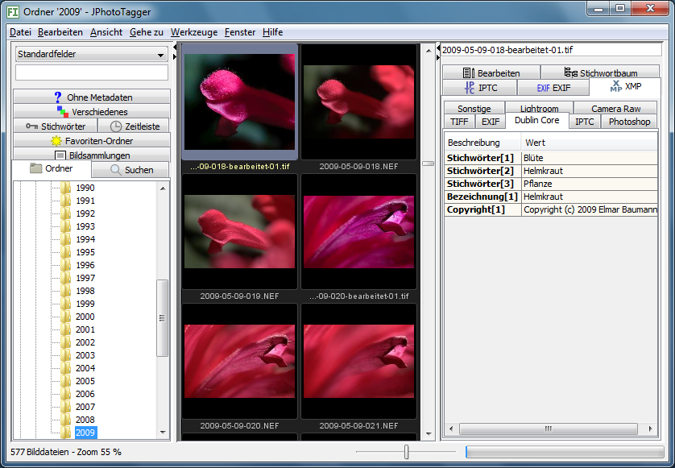
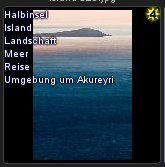
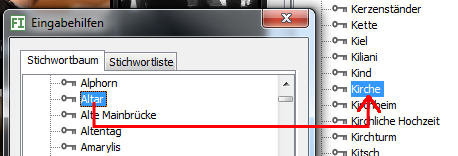
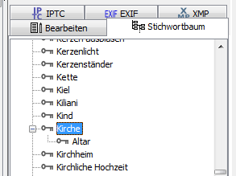

Das Programm JPhotoTagger hilft Ihnen, Ihre Bilder zu kennzeichnen ("taggen") und schnell zu finden.
Ihnen stehen unter anderem folgende Eingabehilfen zur Verfügung:
Landschaft, falls Sie Baum zuordnen
Die Bilder können Sie:
Gefunden werden die Bilder über verschiedene Merkmale wie Stichwörter, Beschreibung und Aufnahmeorte. Diese Daten werden als Metadaten bezeichnet und Sie können die Metadaten im Programm JPhotoTagger eingeben. Damit Sie möglichst wenig Arbeit haben, können Sie Vorlagen speichern mit immer wieder benutzten Angaben, z.B. Ihre Kontaktdaten und das Copyright. Haben Sie mehrere Bilder ausgewählt, werden Ihre Eingaben für alle Bilder gespeichert. Ihre bisherigen Eingaben werden vorgeschlagen, während Sie neue Begriffe eingeben.
Was Sie eingeben, wird in
XMP-Filialdateien gespeichert.
Das sind Dateien des gleichen Namens wie die Bilder und der
Endung xmp. Heißt ein Bild Blume.jpg, ist
seine Filialdatei Blume.xmp. Eine Filialdatei ist im
gleichen Ordner gespeichert wie das Bild. Zusätzlich werden Ihre
Eingaben in eine Datenbank geschrieben und so
schnell gefunden.
Auch die Vorschaubilder sind im gleichen Ordner gespeichert wie die Datenbank, damit sie schnell angezeigt werden.
Wurde ein Bild oder seine Filialdatei außerhalb dieses Programms aktualisiert, werden das Vorschaubild und/oder die Metadaten in der Datenbank automatisch erneuert.
Falls Sie die Metadaten zusätzlich in Ihren Bildern haben wollen, erreichen Sie das mit einem Skript (Beispiel-Skript).
Die Vor- und Nachteile von XMP-Filialdateien sind beschrieben unter Warum XMP-Filialdateien?.
Es können zusätzlich IPTC-Daten angezeigt werden. Diese können Sie als importieren. IPTC ist ein älterer Standard und die Daten stehen (stets) in den Bildern.
In Bildern enthaltene - eingebettete - XMP-Daten können angezeigt werden, falls keine XMP-Filialdatei existiert und ebenfalls importiert werden.
Außerdem werden EXIF-Daten angezeigt und nach einigen kann gesucht werden.
Stellen Sie bitte zuerst das Programm ein über das Menü Bearbeiten > Einstellungen. Es öffnet sich der Einstellungen-Dialog. Haben Sie alles eingestellt, können Sie Bilder in die Datenbank einlesen lassen und anschließend danach suchen.
Einmal eingelesen in die Datenbank, werden die Vorschaubilder schneller angezeigt. Das Einlesen kann auf verschiedene Weisen geschehen:
Erst nach dem Einlesen kann nach Bildern gesucht werden, die bereits Metadaten enthalten. Metadaten, die Sie ins Programm JPhotoTagger eingeben und dort abspeichern, werden sofort in die Datenbank geschrieben und bei einer Suche berücksichtigt.
Sind in Ihren Bildern IPTC-Daten eingebettet, können Sie diese importieren. Das gleiche gilt für eingebettete XMP-Daten: Diese lassen sich auch importieren.
Das Programmfenster ist aufgeteilt in vier Bereiche:

Oben links und rechts des Vorschaubildfensters sind je zwei kleine Dreiecke eingezeichnet. Klicken Sie auf das Dreieck, dessen Spitze nach außen zeigt, wird das Vorschaubildfenster in diese Richtung vergrößert, die Kartenreiter werden dabei überdeckt. Durch Klicken auf den Pfeil nach innen wird das Vorschaubildfenster wieder verkleinert.
Geben Sie beispielsweise Stichwörter ein, können Sie die linke Seite vergrößern und sehen so mehr Vorschaubilder.
Alle Befehle gelten für eine Auswahl, werden nur auf diese angewendet. Die Vorschaubilder in der Mitte können Sie mit der Maus auswählen:
Mit dem Regler unten können Sie die Größe der Vorschaubilder stufenlos einstellen zwischen 10 % und 100 % der eingelesenen Größe. Gute Qualität erzielen Sie, wenn Sie die Vorschaubilder groß einlesen lassen und für mehr Übersicht verkleinern.
Mit dem Tastenkürzel Strg++ (gleichzeitig Steuerung und Plus-Taste) vergrößern Sie das Bild jeweils um 10 %, mit Strg+- (gleichzeitig Steuerung und Minus-Taste) verkleinern Sie es in 10 %-Schritten innerhalb der Grenzen von 10 % bis 100 % der eingelesenen Größe.
Sie können in das Eingabefeld links oben einen Suchtext eingeben. Nachdem Sie die Enter-Taste (Return) gedrückt haben oder die Schaltfläche Suchen betätigt, wird nach dem Text gesucht, den Sie eingegeben haben. Ihre Eingaben werden automatisch vervollständigt anhand gespeicherter Metadaten. Tipp: Mit der Tastenkombination Strg+F springen Sie schnell in das Suchen-Eingabefeld.
Mehr über die Suche steht im Dokument Die Schnellsuche.
Klicken Sie mit der rechten Maustaste, klappen manchmal Menüs auf neben dem Mauszeiger, die sogenannten Kontextmenüs, und zeigen Optionen an für das, was sie auswählten ("markierten"). Bedingungen:
In die Vorschaubilder können unterschiedliche Kennzeichnungen eingeblendet sein. Diese sind hier beschrieben.
Erscheint rechts unten ein rotes Quadrat, existiert die Datei nicht mehr im Ordner, unter dem sie in die Datenbank eingelesen wurde.
Dies kann der Fall sein, sofern Sie Dateien sehen, die nicht die Dateien eines Ordners sind (Kartenreiter Ordner oder Favoriten), also Ergebnis einer Suche, der Auswahl eines Stichworts usw.
Speichern Sie Ihre Bilder auf Wechselfestplatten, die nicht dauerhaft angeschlossen sind, ist dies nicht unüblich.
Falls die Datei im Ordner nicht mehr existieren wird, können Sie diese aus der Datenbank löschen:
Wählen Sie im Menü Ansicht > Metadaten einblenden, werden ausgewählte Metadaten über das Bild eingeblendet:

Sie können nach Bildern schnell suchen: Geben Sie Text ein ins Eingabefeld links oben im Programmfenster. Sie gelangen dort hin durch Mausklick, über das Menü Gehe zu oder mit der Tastenkombination Strg+F.
Gesucht wird (erst), nachdem Sie die Enter/Return-Taste betätigen, während das Such-Eingabefeld ausgewählt ist oder auf die Schaltfläche "Suchen" klicken.
Über dem Eingabfeld ist ein Dropdown-Listenfeld, das bestimmt, (einschränkt) wo gesucht wird:
Im Gegensatz zu anderen Suchen verlangen Suchen mit Strichpunkt
präzise Eingaben. Suchen ohne Strichpunkt finden ein Bild
mit Sandra Bauer, falls Sie nur Sandra
eingeben. Trennen Sie mehrere Begriffe mit einem Strichpunkt, geben
Sie Sandra Bauer ein, andernfalls werden keine
Bilder gefunden, auf denen Sandra Bauer zu sehen
ist, außer diese haben zusätzlich ein Stichwort, das nur
Sandra heißt.
Unterhalb der Schnellsuche ist ein Dropdown-Listenfeld, mit dem die angezeigten Bilder eines Ordners, einer Suche etc. weiter eingeschränkt werden. So finden Sie schnell alle Bilder, die noch keine Metadaten haben, mit 3 oder mit 5 Sternen bewertet sind usw. Sie können Dateinamenfilter definieren und so das Listenfeld ergänzen.
Für umfangreichere Filter benutzen Sie die Erweiterte Suche.
Eingaben in die Texteingabefelder des Kartenreiters Bearbeiten und in das Suchen-Texteingabefeld werden automatisch vervollständigt:
Falls ein Fehler auftritt, melden Sie das bitte sobald wie möglich über den Menüeintrag Hilfe > Fehler melden. Für Wünsche benutzen Sie den Menüeintrag Hilfe > Wünsche melden.
Für das JPhotoTagger-Team ist es ungünstig, Dokumente mit vielen Seiten durchzuarbeiten: Es kostet Zeit, die Wahrscheinlichkeit, nicht alles zu erkennen ist größer und es dauert länger, bis Fehler behoben sind. Nicht zuletzt ist es weniger motivierend, viele Seiten durchzuarbeiten, als nach und nach kleinere Aufgaben durchzuführen. Dies gilt sicher auch für die Verfasser.
Haben Sie viele Stichwörter im Stichwortbaum, kann es zeitaufwändig sein, diese hierarchisch zu sortieren.
Öffnen Sie im Menü Fenster den Dialog Eingabehilfen (F9) und wählen dort den Kartenreiter Stichwörter aus und stellen diesen ein auf die Baumansicht.
Im Programmfenster rechts wählen Sie den Kartenreiter Stichwörter aus und stellen diesen ebenfalls auf die Baumansicht ein.
Ziehen Sie den Eingabehilfen-Dialog auf passende Größe und schieben diesen neben den rechten Stichwortbaum.
Nun können Sie beide Stichwortbäume auf verschiedene Stichwort-Positionen einstellen und Stichwörter von einem Baum in den anderen ziehen mit der Maus.
Wollen Sie unter Zoo einen Aal und eine
Barbe einfügen, stellen Sie einen Baum auf
Zoo ein, den anderen auf Aal, wählen
Aal und Barbe aus, ziehen diese aus ihren
Baum in den anderen und lassen beide auf Zoo fallen.
In der Abbildung unten wird so Altar der
Kirche untergeordnet.


Klicken Sie im Stichwortbaum unten auf die Schaltfläche Alle ausklappen, falls nicht geschehen. Anschließend klicken Sie in den Stichwortbaum und tippen einigermaßen schnell die Anfangsbuchstaben des Stichworts ein. So wird der Stichwortbaum schnell auf das Stichwort eingestellt.
Wollen Sie aus einer langen Liste (Stichwörter, Fotoalben, ...) schnell einen Eintrag auswählen, klicken Sie in die Liste und tippen einigermaßen schnell den Namen des Eintrags ein. Die Liste stellt sich darauf ein.
Haben Sie dem Stichwort Landschaft das Stichwort
Baum untergeordnet und bemerken, bei einigen Bäumen
fehlt das Stichwort Landschaft, können Sie dies auf ein
Mal nachholen:
Baum unterhalb Landschaft
Landschaft enthalten.
Baum auf eines der ausgewählten Bilder: Diesen
werden das Stichwort Baum zugeordnet sowie alle
übergeordneten Stichwörter, in diesem Fall
Landschaft
Im Kartenreiter Ordner sehen Sie die Ordner Ihres Computers. Klicken Sie mit der linken Maustaste auf einen Ordner, in dem Bilder sind, werden Vorschauen davon angezeigt im mittleren Fensterbereich.
Haben Sie einen Ordner ausgewählt und klicken mit der rechten Maustaste darauf, öffnet sich ein Kontextmenü mit verschiedenen Aktionen.
Im Kartenreiter Suchen sehen Sie Ihre gespeicherten erweiterten Suchen. Eine gespeicherte Suche enthält stets die aktuellen Bilder mit bestimmten Eigenschaften, beispielsweise alle Bilder, auf denen Ihr Freund zu sehen ist.
Klicken Sie mit der linken Maustaste auf eine Suche, werden die gefundenen Bilder angezeigt.
Die rechte Maustaste zeigt ein Kontextmenü mit verschiedenen Optionen wie das Umbenennen oder Bearbeiten einer Suche.
Im Kartenreiter Fotoalben können Sie Fotoalben auswählen und so dessen Bilder anzeigen. Ein Fotoalbum ist eine Auswahl von Bildern nach von Ihnen festgelegten Kriterien, beispielsweise
Sie können die Reihenfolge der Bilder in einem Fotoalbum ändern durch Ziehen und Ablegen.
Klicken Sie mit der linken Maustaste auf ein Fotoalbum, werden in der Fenstermitte Vorschaubilder dieses Fotoalbums angezeigt.
Die rechte Maustaste zeigt ein Kontextmenü mit verschiedenen Optionen.
Das Fotoalbum Zuletzt importiert enthält die Bilder, die Sie als letztes importierten.
Wählen Sie Bilder aus und drücken anschließend die Taste P (englisch: "Pick"), werden die ausgewählten Bilder in das Fotoalbum Ausgewählt eingefügt. Sie können auch das Kontextmenü des Vorschaubildfensters benutzen.
Hier können Sie Bilder sammeln, die Sie in Erwägung ziehen für einen bestimmten Zweck, z.B. zum Behalten nach einem Import von der Kameraspeicherkarte, für ein Fotobuch, zur Veröffentlichung im Web etc. Nach und nach füllen Sie das Fotoalbum und entfernen wieder ungeeignete Bilder mit der Taste Entf.
Benötigen Sie den Inhalt nicht mehr oder wollen das Fotoalbum erneut befüllen, können Sie die Bilder auswählen und entfernen mit der Taste Entf; von der Festplatte werden diese so nicht gelöscht.
Wählen Sie Bilder aus und drücken anschließend die Taste R (englisch: "Reject"), werden die ausgewählten Bilder in das Fotoalbum Verworfen eingefügt. Sie können auch das Kontextmenü des Vorschaubildfensters benutzen.
Hier können Sie Bilder sammeln, die Sie nicht mehr wollen, aber noch einmal überprüfen möchten, bevor Sie diese von der Festplatte löschen. Nach und nach füllen Sie das Fotoalbum und entfernen wieder Bilder, die Sie doch behalten wollen, mit der Taste Entf.
Von der Festplatte löschen Sie die Bilder über das Kontextmenü des Vorschaubildfensters: Vom Datenträger löschen.
Im Kartenreiter Stichwörter / Listenansicht werden alle Stichwörter angezeigt, die Sie Ihren Bildern zuordneten. Klicken Sie in der Stichwortliste im Programmfenster links auf ein Stichwort, werden alle Bilder mit diesem Stichwort angezeigt.
Nur in der Listenansicht ändert das Bearbeiten eines Stichworts die Stichwörter in den XMP-Filialdateien.
Wählen Sie mehr als ein Stichwort aus, können Sie bestimmen, welche Bilder angezeigt werden durch Ankreuzen einer der Optionen unterhalb der Stichwortliste:
Es werden Bilder angezeigt, die alle ausgewählten Stichwörter enthalten. So finden Sie Bilder, auf denen ein Baum zu sehen ist und gleichzeitig der Himmel oder auf dem Ihr Freund Peter zu sehen ist zusammen mit Ihrer Freundin Sabine.
Es werden Bilder angezeigt, die eines oder mehrere der ausgewählten Stichwörter enthalten. Dies ist insbesondere sinnvoll, falls Sie das gleiche Stichwort unterschiedlich schrieben, beispielsweise einmal mit Bindestrich und einmal ohne.
Im Stichwortbaum sind Stichwörter hierarchisch organisiert. Hierarchische
Stichwörter können anderen Stichwörtern über- oder untergeordnet
sein. Beispielsweise könnte Landschaft dem
Baum übergeordnet sein und dieser der Buche.
Der Stichwortbaum hilft beim Eingeben. Er dient nicht dem Bearbeiten von Metadaten. Ändern Sie im Stichwortbaum ein Stichwort, hat das keine Auswirkungen auf die Metadaten in den Filaldateien. Benutzen Sie dazu die Listenansicht.
JPhotoTagger ordnet Bildern keine Hierarchien zu, da dies nicht standardisiert ist. Näheres dazu können Sie im Dokument Behandlung von Stichworthierarchien lesen.
Wählen Sie im linken Stichwortbaum des Programmfensters ein Stichwort aus, werden Bilder angezeigt, die dieses Stichwort enthalten und alle übergeordneten Stichwörter.
Jedes neu angelegte Stichwort ein "echtes": Es wird für eine Übernahme vorgeschlagen. Wollen Sie ein Stichwort nur zum Ordnen benutzen, wählen Sie es aus, klicken die rechte Maustaste und wählen aus dem Kontextmenü: Umschalten: Echt. Aus einem "echten" Schlüsselwort wird eines, das Sie zum Ordnen benutzen können und umgekehrt.
Wählen Sie im rechten Stichwortbaum des Programmfensters ein Stichwort aus, klicken mit der rechten Maustaste und wählen Hinzufügen zu ausgewählten Bildern. Das ausgewählte Stichwort und seine übergeordneten Stichwörter werden darauf hin eingetragen in den Kartenreiter Bearbeiten. Sie können auch die Tastenkombination Strg+B drücken oder das Stichwort auf Bilder ziehen.
Sie können ein neues Stichwort auf folgende Arten hinzufügen:
Sie ändern den Namen eines Stichworts auf zwei Arten:
Sie löschen ein Stichwort auf zwei Arten:
Klicken Sie mit der linken Maustaste auf ein Stichwort, ziehen es zu einem anderen Stichwort und lassen es dort fallen.
Tippen Sie im Kartenreiter Bearbeiten ein Stichwort ein und drücken die Tasten Strg+K, wird ein Dialog angezeigt, der alle übergeordneten Stichwörter des eingegebenen Stichworts anzeigt. Diese können Sie eintragen lassen. Anstelle Strg+K können Sie die Schaltfläche mit dem K betätigen. K steht für Keyword, dem englischen Begriff für Stichwort (Schlüsselwort). Sie können alle Stichwörter eintragen lassen, einzelne oder keine. Wollen Sie nur einzelne eintragen lassen, wählen Sie diese aus im Dialog und betätigen die Schaltfläche Markierte auswählen .
Der Kartenreiter Favoriten zeigt Lesezeichen für alle Ordner, die Sie häufig benötigen und deswegen hier abgelegt haben. Der Vorteil gegenüber dem Ordner-Kartenreiter ist:
Klicken Sie mit der linken Maustaste auf ein Lesezeichen, werden Vorschaubilder angezeigt für alle Bilder dieses Ordners. Mit der rechten Maustaste erhalten Sie ein Kontextmenü mit verschiedenen Optionen wie dem Bearbeiten, Verschieben oder Löschen des Favoriten (aus dem Kartenreiter, nicht aus dem Dateisystem).
Im Kartenreiter Zeitleiste werden alle Tage angezeigt, an denen Sie Bilder fotografierten (und nur diese). Wählen Sie ein Jahr aus, werden alle Bilder dieses Jahres angezeigt, bei einem Monat alle Bilder dieses Monats in diesem Jahr und bei einem Tag alle Bilder dieses Tages dieses Monates dieses Jahres.
Voraussetzung: Die Bilder wurden eingelesen in die Datenbank und enthalten EXIF-Metadaten, in denen die Aufnahmezeit steht oder Sie gaben das Datum ein in den Kartenreiter Bearbeiten.
Bilder in der Datenbank ohne diese Voraussetzung sind zusammengefasst unter dem Symbol Ohne Datum.
Im Kartenreiter Verschiedenes werden ausgewählte Metadaten angezeigt, die nicht in den anderen Kartenreitern vorkommen. Dieser könnte zukünftig erweitert werden.
Unter Fototechnik stehen Daten, die Ihre Kameras in die Bilder schrieben.
Voraussetzung: Die Bilder wurden eingelesen in die Datenbank und enthalten EXIF-Metadaten, in denen die einzelnen Attribute stehen, die folgend aufgelistet werden:
Unter dem Symbol Kamera sehen Sie die verschiedenen Kameras, die in der Datenbank gespeichert sind. Klicken Sie auf ein Kamerasymbol, werden alle Bilder angezeigt, die Sie mit dieser Kamera fotografierten.
Unter dem Symbol Brennweite sehen Sie die verschiedenen Brennweiten, die in der Datenbank gespeichert sind. Klicken Sie auf ein Brennweitensymbol, werden alle Bilder angezeigt, die Sie mit dieser Brennweite fotografierten.
Unter dem Symbol ISO sehen Sie die verschiedenen ISO-Werte, die in der Datenbank gespeichert sind. Klicken Sie auf ein ISO-Symbol, werden alle Bilder angezeigt, die Sie mit dieser ISO-Einstellung fotografierten.
Unter Angaben zu den Bildern stehen Metadaten, die Sie oder andere in die Bilder schrieben und die nicht bereits in einem anderen Kartenreiter angezeigt werden.
Voraussetzung: Die Bilder wurden eingelesen in die Datenbank und enthalten Metadaten, in denen die einzelnen Attribute stehen, die folgend aufgelistet werden:
Unter Aufnahmeort stehen alle verschiedenen Aufnahmeorte. Klicken Sie einen Aufnahmeort an, werden alle Bilder angezeigt, die dort fotografiert wurden.
Unter Fotograf stehen alle verschiedenen Fotografen. Klicken Sie einen Fotografen an, werden alle Bilder angezeigt, die dieser Fotograf fotografierte.
Unter Copyright stehen alle verschiedenen Rechte am Bild. Klicken Sie eine Copyright an, werden alle Bilder angezeigt, die dieses Copyright besitzen.
Unter Eigentümer stehen alle verschiedenen Eigentümer der Bilder. Klicken Sie einen Eigentümer an, werden seine Bilder angezeigt.
Unter Bewertung stehen alle verschiedenen Bewertungen der Bilder. Klicken Sie eine Bewertung an, werden Bilder mit dieser Bewertung angezeigt.
Im Kartenreiter Ohne Metadaten finden Sie Bilder in der Datenbank, denen noch keine Metadaten zugeordnet wurden, beispielsweise Bilder ohne Stichwörter oder ohne Kurzbeschreibung.
Im Kartenreiter IPTC sehen Sie IPTC-Daten, die andere Programme in die Bilder schrieben.
Betätigen Sie die Schaltfläche Importieren, werden die IPTC-Daten in die XMP-Filialdatei des Bilds geschrieben. Existiert noch keine XMP-Filialdatei, wird eine neue erzeugt.
Im Kartenreiter EXIF sehen Sie Daten, die Ihre Digitalkamera in das Bild schrieb, das Sie im Vorschaubild-Fenster auswählten. Daten mit andersfarbigem Hintergrund werden in die Datenbank geschrieben und Sie können danach suchen.
Sind GPS-Daten eingebettet, können Sie ein Satellitenfoto anzeigen lassen vom Aufnahmenstandort durch Betätigen der Schaltfläche Google Maps, sofern eine Verbindung zum Internet besteht.
Betätigen Sie die Schaltfläche Importieren, werden die EXIF-Daten - aktuell nur das Aufnahmedatum - in die XMP-Filialdatei des Bilds geschrieben. Existiert noch keine XMP-Filialdatei, wird eine neue erzeugt.
Im Kartenreiter XMP sehen Sie Daten, die Sie mit dem Programm JPhotoTagger in XMP-Filialdateien schrieben oder mit anderen Programmen wie Adobe Photoshop Lightroom. Daten mit andersfarbigem Hintergrund werden in die Datenbank geschrieben und Sie können danach suchen.
XMP-Daten können sehr umfangreich sein und sind deshalb auf verschiedene Kartenreiter verteilt, je XMP-Namensraum einer. Folgende Namensräume werden angezeigt:
Über den Kartenreiter Bearbeiten können Sie die Metadaten eines oder mehrerer Bilder gleichzeitig bearbeiten. Sie benötigen:
Ohne Schreibrechte sind die Eingabefelder dunkler und es steht am Ende im Kartenreiter Bearbeiten, dass Bearbeiten nicht möglich ist.
Ihre Daten werden gespeichert - in XMP-Filialdateien geschrieben - falls Sie ein Eingabefeld verlassen oder JPhotoTagger beenden. Sie können JPhotoTagger auch so einstellen, dass die Daten erst gespeichert werden, nachdem die Bildauswahl sich ändert.
Die Schaltflächen links der Eingabefelder mit einem Minus-Zeichen klappen die Eingabefelder ein und jene mit einem Plus-Zeichen klappen die Eingabefelder aus. Sie sparen Platz durch Einklappen jener Felder, in die Sie nur selten Text eingeben.
Mit der Tabulator-Taste gehen Sie von Eingabefeld zu Eingabefeld. Ihnen wird in jedem Eingabefeld Text vorgeschlagen, den Sie dort einmal eingaben, falls er in der Datenbank steht.
Zeigen Sie mit der Maus etwas länger auf die Überschrift eines Eingabefelds, erscheint ein Werkzeugtipp (Tooltip) mit weiteren Informationen, was in das Eingabefeld hineingeschrieben werden soll.
Folgende Daten können mehrfach vorkommen:
Ein Bereich mit mehrfachen Daten ist zweigeteilt: Oben ist eine Liste mit den bisherigen Eingaben, unten ein einzeiliges Eingabefeld.
Geben Sie Daten in das einzeilige Eingabefeld ein und drücken die Enter-Taste oder klicken mit der Maus auf die Plus-Schaltfläche (+), wird Ihre Eingabe in die Liste übernommen, falls sie dort nicht existiert.
Wollen Sie Einträge aus der Liste löschen, wählen Sie einen Eintrag aus oder mehrere und klicken auf die Minus-Schaltfläche (-). Sie können auch das Kontextmenü benutzen (rechte Maustaste).
Wollen Sie einen Eintrag in der Liste umbenennen oder mehrere, wählen Sie die Einträge aus, klicken mit der rechten Maustaste und wählen aus dem Kontextmenü "Umbenennen".
Wählen Sie (genau) ein Bild aus, werden dessen Metadaten angezeigt. Durch Entfernen aus den Eingabefeldern und der Stichwortliste löschen Sie Daten.
Wählen Sie mehrere Bilder aus, werden die gemeinsamen Metadaten angezeigt. Dazu werden die XMP-Filialdateien aller ausgewählten Bilder eingelesen und deren Daten verglichen.
Text, den Sie eingeben, wird allen ausgewählten Bildern zugewiesen.
Falls sich der bisherige Text unterscheidet von Ihrer Eingabe, wird er ersetzt, falls dieser nur einmal vorkommt, wie der Name des Fotografen, das Copyright, der Aufnahmeort (alles außer Stichwörter).
Geben Sie Text ein in Felder mit sich wiederholenden Metadaten - Stichwörter - wird dieser allen ausgewählten Bildern hinzugefügt, sofern er dort nicht existiert.
Metadaten, die Sie löschen, werden aus allen ausgewählten Bildern entfernt.
Schaltflächen und deren Bedeutung, in den Klammern stehen die Tastenkombinationen:
Die Tastenkombinationen funktionieren nur, falls der untergeordnete Kartenreiter "Bearbeiten" ausgewählt ist!
Vorlagen sind Metadaten, die Sie immer wieder benötigen. Einmal abgespeichert mit der Tastenkombination Alt+V oder Mausklick auf die Schaltfläche Als Vorlage speichern, werden sie in die Eingabefelder eingefügt durch die Tastenkombination Alt+E oder Klick auf die Schaltfläche Vorlage einfügen. Die aktuelle Vorlage wird ausgewählt im Dropdown-Listenfeld des Kartenreiters Vorlagen.
Beim Einfügen wird der Text der Vorlage in alle Felder gesetzt, bestehender Text wird durch den Vorlagentext ersetzt. Wo kein Text in der Vorlage ist, wird existierender Text nicht gelöscht.
Für eine Vorlage eignen sich besonders Copyright, Adresse des Fotografen und Stichwörter, die Sie immer wieder benutzen.
Schaltflächen und deren Bedeutung, in den Klammern stehen die Tastenkombinationen:
Die Tastenkombinationen funktionieren nur, falls der untergeordnete Kartenreiter "Vorlagen" ausgewählt ist!
Dieser Befehl aktualisiert im den
Datenbankordner
untergeordneten Ordner thumbnails die
Vorschaubilder der ausgewählten Bilder.
Sinnvoll ist das:
Dieser Befehl aktualisiert in der Datenbank die XMP- und EXIF-Metadaten der ausgewählten Bilder unabhängig davon, ob diese bereits in der Datenbank stehen.
Mit diesem Befehl entfernen Sie die ausgewählten Bilder aus der Datenbank, nicht von der Festplatte. Das ist (lediglich) sinnvoll, falls Sie außerhalb JPhotoTagger diese Bilder löschten oder verschoben.
Sie können das auch (bequemer) erledigen lassen über das Menü Datei > Datenbank, Kartenreiter Wartung.
Mit diesen Befehlen drehen Sie die ausgewählten Vorschaubilder im Uhrzeigersinn um 90, 180 oder 270°. Die Bilddatei wird nicht verändert, nur das Vorschaubild im Datenbankordner.
Öffnet die ausgewählten Bilder mit dem Standard-Programm (für Doppelklicks), das Sie im Einstellungen-Dialog definierten.
Öffnet die ausgewählten Bilder mit einem der weiteren Programme, die Sie im Einstellungen-Dialog definierten.
Mit diesem Befehl erzeugen Sie ein neues Fotoalbum aus den ausgewählten Bildern und fügen es ein in den Kartenreiter Fotoalben.
Mit diesem Befehl fügen Sie einem existierenden Fotoalbum die ausgewählten Bilder hinzu.
Mit diesem Befehl entfernen Sie die ausgewählten Bilder aus einem Fotoalbum, sofern gerade ein Fotoalbum angezeigt wird.
Mit diesem Dialog können Sie alle ausgewählten Bilder in einen Ordner kopieren.
Dieser Befehl öffnet einen Dialog, der den ausgewählten Bildern einen neuen Namen auf dem Datenträger gibt. Sie können jede ausgewählte Datei einzeln umbenennen oder alle auf einmal mit einer Schablone.
Hier geben Sie für jede Datei einen neuen Namen ein, der Dialog zeigt nach jeder Umbenennung die nächste ausgewählte Datei an.
Mit der Schablone können Sie alle ausgewählten Dateien auf einmal einheitlich umbenennen lassen anhand einer Schablone. Sie können bis zu drei Bestandteile des Namens bestimmen:
001
vergeben, für das zweite 002, für das dritte
003 usw. Erhöhen Sie die Schrittweite auf 2, hat
das erste Bild die Ziffernfolge 001, das zweite
003 und das dritte 005.
Sie können die aktuellen Eingaben als Schablone speichern und diese später erneut benutzen durch Auswählen aus dem Dropdown-Listenfeld. Die Schablonen werden in die Datenbank gespeichert.
Speichert die aktuellen Einstellungen als neue Schablone.
Vergibt der aktuellen Schablone einen anderen Namen.
Löscht die aktuelle Schablone.
Aktualisiert die aktuelle Schablone mit den aktuellen Eingaben.
Dieser Befehl verschiebt die ausgewählten Bilder in einen anderen Ordner auf dem Datenträger.
Dieser Befehl löscht (unwiderruflich!) die ausgewählten Bilder vom Datenträger: Einer Festplatte, einem USB-Stick usw.
Mit diesem Dialog können Sie einen oder mehrere Ordner nach Bilder durchsuchen lassen und so die Datenbank mit Metadaten aktualisieren.
Der Dialog wird geöffnet über das Menü Datei > Ordner einlesen, Tastenkürzel Strg+Umschalt+R.
Während des Einlesens können Sie den Dialog zur Seite schieben und weiterarbeiten. Sie können das Einlesen jederzeit abbrechen über die Schaltfläche Einlesen abbrechen.
Ist diese Option aktiviert, werden alle Metadaten neu eingelesen: Vorschaubild, EXIF, XMP. Ist sie deaktiviert, wird nur aktualisiert, was sich verändert hat gegenüber dem letzten Einlesen.
Haben Sie diese Option aktiviert, werden Bilder in sämtlichen Ordnern gesucht, die denen untergeordnet sind, die Sie auswählten.
Den Dialog Datenbankinformationen und -Wartung öffnen Sie über das Menü Datei > Datenbank, Tastenkürzel Strg+Umschalt+D.
Auf dem Info-Kartenreiter sehen Sie, welche Daten enthalten sind in wie vielen Datensätzen.
Wollen Sie wissen, wie viele Bilder in der Datenbank erfasst sind, schauen Sie in die Zeile mit dem Dateinamen.
Entfernt Datensätze, für die es keine Bilder mehr gibt. Sind Bilder in der Datenbank, aber existieren nicht mehr als Datei, werden bei Suchen nicht mehr existierende Bilder berücksichtigt.
Sind Ihre Bilder auf austauschbaren Wechsellaufwerken, die nicht immer angeschlossen sind, sollten Sie diesen Befehl nicht ausführen.
Das Komprimieren der Datenbank verkleinert ihre Dateigröße. Dies ist in der Regel nicht nötig, kann aber sinnvoll sein nach Programmupdates, bei denen die Datenbank modifiziert wurde oder nachdem Sie sehr viele Metadaten verändert oder gelöscht haben.
Verwaiste Vorschaubilder löschen entfernt Vorschaubilder, für die keine Bilddateien in der Datenbank existieren. Das kann der Fall sein, falls Sie außerhalb JPhotoTagger Bilder verschoben oder löschten. So geben Sie auf der Festplatte nicht benötigten Speicherplatz frei.
Löscht Stichwörter, die keinem Bild mehr zugeordnet sind. Das wirkt sich nur auf die Listenansicht aus, die die "echten" Stichwörter anzeigt, nicht auf die Baumansicht, die eine Eingabehilfe ist.
Löscht Kameras, Objektive, Aufnahmeorte etc. aus der Datenbank, falls kein Bild in der Datenbank damit (dort) fotografiert wurde. Die Ansicht wird erst aktualisiert nach einem Neustart von JPhotoTagger! Z.B. zeigt der Kartenreiter Verschiedenes anschließend noch z.B. Objektive an, mit denen kein Bild fotografiert wurde.
Dieser Befehl aktualisiert in der Datenbank die EXIF-Daten aller bekannten Bilder. Dazu liest JPhotoTagger erneut alle EXIF-Daten der Bilder und überschreibt mit diesen die alten Datenbankwerte. Hatte ein Bild mit EXIF früher keine EXIF-Daten, werden diese nun in die Datenbank geschrieben.
Das ist auch sinnvoll, falls (erst) in einer späteren Version von JPhotoTagger neue kamera-spezifische Eigenschaften in der Datenbank gespeichert werden, denn automatisch werden die EXIF-Daten erst aktualisiert, falls das Datum der letzten Änderung der Bilddatei sich ändert und JPhotoTagger dies bemerkt.
Dieser Befehl aktualisiert in der Datenbank die XMP-Daten aller bekannten Bilder. Dazu liest JPhotoTagger erneut alle XMP-Daten der Bilder und überschreibt mit diesen die alten Datenbankwerte. Hatte ein Bild mit XMP früher keine XMP-Daten, werden diese nun in die Datenbank geschrieben.
Berechnet alle Vorschaubilder neu. Dies ist z.B. sinnvoll, falls Sie ein externes Programm zum Erzeugen der Vorschaubilder benutzen und eine neue Programmversion bessere Ergebnisse erzielt. So können Sie bereits erzeugte Vorschaubilder schlechterer Qualität ersetzen lassen durch Vorschaubilder mit besserer Quailtät.
Öffnet den Dialog "In der Datenbank Dateipfade umbenennen".
Kopiert alle Stichwörter aus der Stichwortliste in den Stichwortbaum unterhalb dessen Wurzel, falls diese dort noch nicht existieren. Dies kann sinnvoll sein, falls Sie mit einer älteren Version von JPhotoTagger über den Kartenreiter Bearbeiten den Bildern Stichwörter vergaben; diese wurden nicht automatisch in den Stichwortbaum übertragen.
Löscht alle Stichwörter des Stichwortbaums. Dieser kann anschließend wieder mit (existierenden, "echten") Stichwörter gefüllt werden über die Schaltfläche Stichwörter in den Stichwortbaum kopieren.
Liest EXIF-Daten aus allen bekannten Dateien und überträgt diese in die XMP-Filialdateien. Hat eine Bilddatei keine entsprechenden XMP-Metadaten, werden die EXIF-Daten übertragen, sofern existent, existierende XMP-Werte werden nicht überschrieben.
Aktuell wird nur das Aufnahmedatum übertragen.
Sie können Bilder von der Kamera-Speicherkarte oder einem anderen Ordner einschließlich dessen untergeordneten Ordnern in einen (anderen) Ordner kopieren lassen.
Rufen Sie den Import-Dialog auf über das Menü Datei > Bilder importieren, Tastenkürzel Strg+Umschalt+P.
JPhotoTagger sucht im ausgewählten Quellordner einschließlich dessen untergeordneten Ordnern nach Bildern und kopiert alle gefundenen in den Zielordner.
Falls Sie nicht alle Dateien eines Ordners importieren wollen, können Sie aus einem Ordner einzlene Bilddateien auswählen. Der Auswahldialog zeigt das Vorschaubild eines ausgewählten Bilds an.
Alle Bilder werden in den Zielordner kopiert. Existiert dort eine Datei gleichen Namens, wird der kopierten Datei eine Nummer hinzugefügt, Dateien werden nicht überschrieben.
Kreuzen Sie diese Option an, werden nach dem Import alle importierten Dateien vom Quelldatenträger gelöscht.
Von allen importierten Bildern werden Vorschaubilder erzeugt und die Metadaten werden in die Datenbank eingefügt. Anschließend werden alle importierten Bilder im Album Zuletzt importiert angezeigt.
Es werden nur Bilder importiert, keine XMP-Filialdateien! Benutzen Sie für diesen Zweck den Kartenreiter Ordner und die Vorschaubildansicht: Auswählen und Einfügen in unterschiedliche Vorschaubildansichten unterschiedlicher Ordner.
Über das Menü Datei > Exportieren > Verschiedene JPhotoTagger-Daten können Sie alle Daten exportieren, die JPhotoTagger (wieder) importieren kann.
In den Ordner, den Sie auswählten, werden Dateien mit
standardisierten Namen geschrieben. Existieren bereits Dateien
dieses Namens, werden diese ohne Rückfrage überschrieben!
Wollen Sie mit dem Export Daten sichern und mehrere
Datei-Versionen behalten, exportieren Sie die Daten in
unterschiedliche Ordner, beispielsweise mit dem Datum als Namen,
z.B. 2010-03-10 für den 10.03.2010.
Nutzen Sie diese Funktion zum Sichern und/oder zum Austauschen zwischen verschiedenen JPhotoTagger-Datenbanken.
Über das Menü Datei > Importieren > JPhotoTagger-Daten können Sie Daten importieren, die JPhotoTagger exportiert hat.
Im ausgewählten Ordner müssen die exportierten Dateien existieren, und die gleichen Namen haben, unter die sie JPhotoTagger beim Export speicherte.
Sie können JPhotoTagger über den Einstellungen-Dialog an Ihre Bedürfnisse anpassen. Dieser wird aufgerufen über das Tastenkürzel Strg+Umschalt+S oder das Menü Bearbeiten > Einstellungen. Der Einstellungen-Dialog hat folgende Kartenreiter:
Mit der erweiterten Suche definieren Sie Bildauswahlen anhand bestimmter Kriterien, beispielsweise alle Bilder, auf denen Blumen abgebildet sind, die Sie an einem bestimmten Ort fotografierten. Sie können die Suche unter einem Namen speichern und zukünftig schnell ausführen durch Klicken auf den Suchnamen im Kartenreiter Suchen.
Sie rufen die Suche auf mit der Funktionstaste 3 (F3) oder über das Menü Bearbeiten > Suchen.
Gesucht und gefunden werden Bilder, deren Metadaten in der Datenbank stehen.
Hier können Sie Stichwörter eintragen, die ein Bild alle haben muss, damit es gefunden wird.
Die hier eingetragenen Stichwörter werden verknüpft mit den Eingaben des Kartenreiters Einfaches SQL.
Die Suche findet nichts, falls Sie im Kartenreiter "Einfaches SQL" ein weiteres Stichwort nicht mit ODER verknüpfen! Die Begründung steht weiter unten.
Im zweiten Dropdown-Listenfeld von links wählen Sie aus, was Sie suchen: Aufnahmezeit, Bildbeschreibung, Fotograf, ... Im folgenden Dropdown-Listenfeld wählen Sie aus, wie der folgende Suchtext interpretiert werden soll:
Ei% passt auf alles, das mit Ei
anfängt: Ei, Eier, Einser, Eis, ...
%eier% passt auf alles, das irgendwo
eier enthält: Eier, Schlaumeier,
Eierbecher, Zweierbeziehung, ...
%en passt auf Begriffe mit en
am Ende: Einsen, Wiesen, Burgen, ...
Groß- und Kleinschreibung sind egal: Sie können nach meyer suchen oder nach Meyer, gefunden werden die gleichen Bilder.
Der Dialog versucht, für die Eingabefelder nur passende Formate zuzulassen. Geben Sie beispielsweise Buchstaben ein für eine ISO-Zahl, werden diese nicht angenommen. Ist ein Punkt zu sehen, steht dieser für ein Komma und Sie geben Zahlen so ein, dass ganze Zahlen vor dem Punkt enden. Mit den Pfeiltasten können Sie den Eingabecursor positionieren.
Das Datumsformat ist: JJJJ-MM-DD: Das Jahr vierstellig,
danach ein Bindestrich, folgend der Monat zweistellig, wieder ein
Bindestrich und zuletzt der Tag zweistellig. Für den 24.12.2007
geben Sie ein 2007-12-24. Sie können auch den
Kalender benutzen (Schaltfläche rechts).
Es gibt zwei Datumsfelder, gekennzeichnet durch unterschiedliche Symbole: Eines, das Sie eingeben können im Kartenreiter Bearbeiten und eines, das die Kamera in die EXIF-Metadaten des Bilds schrieb. Während für das erste nur das Jahr oder nur Jahr und Monat existieren können, ist ein EXIF-Datum vollständig (Tag, Monat und Jahr).
Suchbegriffe können Sie verknüpfen mit und oder mit oder. Und bedeutet, der folgende Begriff muss auf jeden Fall in der Datenbank stehen, oder findet den folgenden Suchbegriff unabhängig vom vorhergehenden. Beispiele:
Kamera ist gleich Nikon D300 und
Aufnahmeort ist gleich München findet Bilder, die mit der
Nikon D300 in München fotografiert wurden
Kamera ist gleich Nikon D300 oder
Aufnahmeort ist gleich München findet alle Bilder, die
mit der Nikon D300 überall auf der Welt fotografiert wurden und
zusätzlich alle Bilder, die in München mit jeder beliebigen
Kamera fotografiert wurden
Datum größer gleich 2005-01-01 und Datum
kleiner gleich 2005-12-31 findet alle Bilder, die im Jahr
2005 fotografiert wurden
Datum größer 2005-12-31 oder Datum
kleiner 2005-01-01 findet alle Bilder vor 2005 und nach
2005, also alle, die nicht 2005 fotografiert wurden
Mit mehreren Suchbegriffen lassen sich versehentlich unlösbare
Aufgaben stellen: Stichwort ist gleich Baum UND Stichwort ist
gleich Himmel wird nie Bilder finden, da ein Stichwort
entweder "Baum" heißt oder "Himmel".
Für diese Aufgabe gibt es den Kartenreiter
Stichwortkombinationen.
Mit Klammern lassen sich Probleme lösen wie: Finde alle Bilder, die
vom Fotografen Peter oder vom Fotografen
Heinz im Jahr 2006 fotografiert wurden.
Die Anfrage Fotograf ist gleich Peter oder Fotograf ist gleich
Heinz und Aufnahmezeit größer gleich 2006-01-01 und Aufnahmezeit
kleiner gleich 2006-12-31 findet zwar alle Bilder, die Peter
und Heinz 2006 fotografierten, aber auch alle Bilder, die 2006 von
irgendwem (anders) fotografiert wurden. Mit Klammern lässt sich die
Abfrage richtig formulieren: (Fotograf ist gleich Peter oder
Fotograf ist gleich Heinz) und Aufnahmezeit größer gleich 2006-01-01
und Aufnahmezeit kleiner gleich 2006-12-31.
Werden Klammern falsch gesetzt, erzeugt das einen Fehler!
Falls Ihnen die Spalten nicht ausreichen, können Sie weitere hinzufügen durch Betätigen der Schaltfläche Spalte hinzufügen. Sollte der Dialog nicht ausreichend groß gezogen sein oder wollen Sie diesen nicht größer ziehen, erscheint eine Scroll-Leiste mit der Sie die Spalten nach oben oder unten schieben können.
Mit der Schaltfläche Spalte entfernen können Sie hinzugefügte Spalten entfernen (und nur diese).
Dieser Kartenreiter ist nur für Experten gedacht, die sich auskennen mit SQL und die Datenbankstruktur von JPhotoTagger kennen! Die Gültigkeit einer Abfrage wird nicht geprüft!
Die Ergebnistabelle einer SQL-Abfrage muss files sein
mit der (einzigen, ersten) Spalte filenames: Die Namen
der gefundenen Bilddateien.
Da JPhotoTagger seine Datenbank stets aus den XML-Filialdateien
aktualisiert, ist die Datenbankstruktur darauf ausgelegt, und nicht
optimal normalisiert, sodass die Abfragen etwas komplexer ausfallen.
Hier ist ein UML-Diagramm als PNG-Grafik, das die Beziehungen der
Tabellen darstellt:
http://www.elmar-baumann.de/JPhotoTagger/dev/img/database.png.
Die Tabellenstrukturen stehen in folgender Quellcode-Datei:
http://code.google.com/p/jphototagger/source/browse/Program/src/org/jphototagger/program/database/DatabaseTables.java.
Sie können alle SQL-Abfragen anzeigen, die JPhotoTagger ausführt: Stellen Sie das Protokoll ein auf AM FEINSTEN und öffnen es über das Menü Fenster > Programm-Ausgaben. Alternativ können Sie die Logdatei mit allen Ausgaben öffnen, deren Anzeige (jedoch) nicht automatisch aktualisiert wird: Fenster > Protokoll mit allen Ausgaben
Ist das Texteingabefeld dieses Kartenreiters ausgefüllt, werden Eingaben in andere Kartenreiter ignoriert.
Speichern Sie wichtige Suchen! Alle gespeicherten Suchen sehen Sie links im Programmfenster durch Klick auf den Kartenreiter Suchen. Dort lassen sie sich ändern, löschen und neu erzeugen durch Klick mit der rechten Maustaste auf eine gespeicherte Suche. Klicken Sie mit der linken Maustaste auf den Namen einer gespeicherten Suche, erscheinen alle gefundenen Bilder.
Über das Menü Werkzeuge > IPTC-Daten importieren, Tastenkürzel Strg+Umschalt+I, öffnen Sie den IPTC-Importdialog. Dort können Sie einen Ordner auswählen, dessen Bilder nach IPTC-Daten durchsucht werden. Gefundene IPTC-Daten werden in XMP-Filialdateien geschrieben. Existiert bereits eine XMP-Filialdatei, wird so verfahren:
Rufen Sie den XMP-Import-Dialog auf über das Menü Werkzeuge > XMP-Daten importieren, Tastenkürzel Strg+Umschalt+X und wählen einen oder mehrere Ordner mit Bildern aus.
JPhotoTagger sucht in den Bildern eingebettete XMP-Daten und schreibt diese in XMP-Filialdateien, falls das Bild noch keine Filialdatei hat.
Eingabhilfen fügen Wörter hinzu in Eingabefelder des Kartenreiters Bearbeiten und der erweiterten Suche. Außerdem können Sie Stichwörter und Vorlagen auf Bilder ziehen und diesen so zuweisen.
Sie können die Eingabehilfen aufrufen über die Funktionstaste 9 (F9) oder das Menü Fenster > Eingabehilfen.
Sie können ein Stichwort auswählen und auf ein Stichwort des Stichwortbaums rechts im Programmfenster ziehen, in die Stichwortliste des Bearbeiten-Kartenreiters oder auf ein Eingabefeld. Es werden das Stichwort und seine echten Elternstichwörter übernommen.
Alternativ können Sie ein Stichwort auf Bilder fallen lassen. In diesem Fall werden die Stichwörter der Bilder ergänzt mit dem fallen gelassenen Stichwort und seinen echten Elternstichwörtern. Lassen Sie Stichwörter auf ein Bild fallen, gilt:
Die (prinzipielle) Arbeit mit dem Stichwortbaum ist unter Kartenreiter "Stichwortbaum" beschrieben.
Sie können eines oder mehrer Stichwörter auswählen und auf die Stichwortliste des Bearbeiten-Kartenreiters ziehen oder auf ein Eingabefeld.
Alternativ können Sie die Stichwörter auf Bilder fallen lassen. In diesem Fall werden die Stichwörter der Bilder ergänzt mit den fallen gelassenen Stichwörtern. Auch hier gilt für das fallen lassen:
Hier können Sie bereits vergebene Metadaten den Bildern zuweisen per Tastenkürzel, Kontextemnü oder durch Ziehen und Ablegen, beispielsweise Aufnahmeorte oder Copyright-Informationen.
Hier sind alle Vorlagen aufgelistet, die Sie im Kartenreiter Bearbeiten angelegt haben. Folgende Aktionen sind möglich:
Aktionen sind Programme oder Skripte (Batch-Dateien) außerhalb von JPhotoTagger, beispielsweise zum Rotieren von Bildern oder Anzeigen einer Diaschau.
Alle Aktionen werden im Aktionen-Dialog angezeigt. Dieser kann aufgerufen werden mit der Funktionstaste 4 (F4) oder über das Menü Fenster > Aktionen. Zusätzlich stehen die Aktionen im Kontextmenü des Vorschaubildfensters.
Klicken Sie zwei mal schnell hintereinander auf eine der angezeigten Aktionen, wird diese ausgeführt für alle ausgewählten Dateien. Alternativ können Sie auf die Schaltfläche Ausführen klicken oder die Tastenkombination Alt+A drücken.
Über die Schaltfläche Neu fügen Sie Aktionen hinzu. Wie eine Aktion erstellt wird, ist beschrieben unter Programmeigenschaften.
Aktionen, deren Programm-/Skriptdateien nicht gefunden wurden, sind mit dem Symbol gekennzeichnet.
Der Aktionen-Dialog kann offen bleiben, während Sie mit JPhotoTagger weiterarbeiten.
Im Synonyme-Dialog (Menü Fenster > Synonyme) können Sie für Stichwörter Synonyme definieren: Wörter die das gleiche bedeuten. Es bieten sich an:
Synonyme sind dafür gedacht, einem Bild nicht redundante Stichwörter hinzuzufügen aufgrund der Beschränkung einer Bildverwaltung.
Beachten Sie:
Ist im Dropdown-Listenfeld der Schnellsuche Standardfelder eingestellt, werden außer nach dem Stichwort auch nach den Synonymen für dieses Stichwort gesucht. Sie können nach einem der Synonyme suchen oder nach dem existierenden Stichwort: Gefunden wird in beiden Fällen.
Ist im Dropdown-Listenfeld der Schnellsuche Stichwort eingestellt, werden außer nach dem Stichwort auch nach den Synonymen für dieses Stichwort gesucht. Sie können nach einem der Synonyme suchen oder nach dem existierenden Stichwort: Gefunden wird in beiden Fällen.
Geben Sie in das Suchfeld mehrere Stichwörter ein getrennt durch Strichpunkte, wird nicht nach Synonymen gesucht.
Bei erweiterten Suchen werden die
Synonyme nicht ausgewertet, Sie können Synonyme selbst
berücksichtigen durch die ODER-Verknüpfung mehrerer
Stichwörter oder das Einbeziehen der Tabelle synonyms
im Kartenreiter Eigenes SQL.
Über das Menü Fenster > Benutzerdefinierte Dateifilter erscheint ein Dialog zum Bearbeiten benutzerdefinierter Dateifilter.
Diese fügen sich ein ins Dropdown-Listenfeld mit den vordefinierten Filtern unterhalb der Schnellsuche und zeigen von den aktuellen Bildern jene an, deren Dateinamen Kriterien erfüllen, die Sie bestimmen.
Die Filter filtern nach Dateinamen, nicht
nach dem ganzen Pfad, nach Blume.jpg, nicht
nach E:\Bilder\Blume.jpg.
Über die Schaltflächen können Sie neue Filter erzeugen, bestehende ändern oder löschen.
Benutzerdefinierte Dateitypen sind Dateien, die JPhotoTagger nicht behandeln kann, für die Sie aber Stichwörter und andere Metadaten vergeben wollen. JPhotoTagger liest keine EXIF- und IPTC-Daten aus diesen Dateien, speichert jedoch alle Metadaten in einer XMP-Filialdatei und Sie können diese Dateien über die Suche finden.
Bestimmen Sie, welche Endung der Dateityp haben kann, beispielsweise "mp4". Bitte lassen Sie
Punkte vor der Endung weg.
Geben Sie einen (kurzen) Text ein, der den Dateityp beschreibt, beispielsweise
"MPEG-4-Vidoedatei".
Dies ist eine "Experten-Einstellung" und Sie sollten nur einen Haken setzen, falls Sie ein eigenes Programm konfiguriert haben, das den Dateityp erkennt und Vorschaubilder erzeugt. Andernfalls benutzt JPhotoTagger ein Platzhalterbild für den Dateityp.
Hinweis für Macintosh- und einige andere Betriebssysteme: Anstelle Strg (Steuerung) wird die Taste des Systems benutzt, beispielsweise bei Macintosh die "Command"-Taste.
| Tasten | Was geschieht? |
|---|---|
| Menü "Datei" | |
| Strg+Umschalt+R | Ordner einlesen (nach neuen/veränderten/gelöschten Bildern durchsuchen) |
| Strg+Umschalt+D | Datenbank (Informationen, Wartung, Aktualisieren) |
| Strg+Umschalt+P | Bilder importieren |
| Strg+Q | JPhotoTagger beenden |
| Menü "Bearbeiten" | |
| Strg+Umschalt+S | Einstellungen ändern |
| F3 | Erweiterte Bildsuche |
| Menü "Ansicht" | |
| Strg+Umschalt+O | In die Vorschaubilder Stichwörter ein- und ausblenden |
| Menü "Gehe zu" | |
| Strg+F | Schnellsuche |
| Strg+Umschalt+E | Kartenreiter Bearbeiten auswählen |
| Strg+1 | Kartenreiter Ordner auswählen |
| Strg+2 | Kartenreiter Gespeicherte Suchen auswählen |
| Strg+3 | Kartenreiter Fotoalben auswählen |
| Strg+4 | Kartenreiter Favoriten auswählen |
| Strg+5 | Kartenreiter Stichwörter im Programmfenster links auswählen |
| Strg+6 | Kartenreiter Zeitleiste auswählen |
| Strg+7 | Kartenreiter Verschiedenes auswählen |
| Strg+8 | Kartenreiter Ohne Metadaten auswählen |
| Strg+0 | Ins Vorschaubildfenster wechseln |
| Alt+1 | Kartenreiter IPTC auswählen |
| Alt+2 | Kartenreiter EXIF auswählen |
| Alt+3 | Kartenreiter XMP auswählen |
| Alt+4 | Kartenreiter Stichwörter im Programmfenster rechts auswählen |
| Menü "Werkzeuge" | |
| Strg+Umschalt+I | IPTC-Daten importieren |
| Strg+Umschalt+X | XMP Daten importieren |
| Menü "Fenster" | |
| F9 | Eingabe-Unterstützungsdialog anzeigen |
| F4 | Aktionen anzeigen |
| F7 | Synonyme-Dialog anzeigen |
| Strg+Umschalt+T | Programmausgaben anzeigen |
| Strg+Umschalt+L | Fehlerprotokoll anzeigen |
| Menü Hilfe | |
| F1 | Hilfe anzeigen |
| Ohne Menüeintrag | |
| Strg+Plus | Vorschaubilder vergrößern, falls kleiner als 100 % angezeigt |
| Strg+Minus | Vorschaubilder verkleinern |
| F1 | Hilfe anzeigen für den aktuellen Kontext |
| Tasten | Was geschieht? |
|---|---|
| 0 | Bewertungen entfernen aus den ausgewählten Bildern |
| 1 | Ausgewählte Bilder bewerten mit einem Stern |
| 2 | Ausgewählte Bilder bewerten mit zwei Sternen |
| 3 | Ausgewählte Bilder bewerten mit drei Sternen |
| 4 | Ausgewählte Bilder bewerten mit vier Sternen |
| 5 | Ausgewählte Bilder bewerten mit fünf Sternen |
| Strg+C | Bilder in die System-Zwischenablage kopieren |
| Strg+Umschalt+C | XMP Metadaten der ausgewählten Bilder kopieren in die Metadaten-Zwischenablage |
| P | Ausgewählte Bilder annehmen |
| R | Ausgewählte Bilder ablehnen |
| Strg+V | Bilder aus der System-Zwischenablage einfügen |
| Strg+X | Bilder in die System-Zwischenablage ausschneiden |
| Strg+Umschalt+V | Kopierte XMP Metadaten einfügen in die ausgewählten Bilder |
| Entf | Ausgewählte Bilder löschen aus dem Ordner oder entfernen aus einem Fotoalbum |
| F2 | Ausgewählte Bilder umbenennen |
| F5 | Ansicht aktualisieren |
| Tasten | Was geschieht? |
|---|---|
| Strg+C | Bilder in die System-Zwischenablage kopieren |
| Strg+N | Neuen Ordner anlegen unterhalb des ausgewählten Ordners |
| Strg+V | Ordner / Bilder aus der System-Zwischenablage einfügen |
| Strg+X | Ordner in die System-Zwischenablage ausschneiden |
| Entf | Ausgewählten Ordner löschen |
| F2 | Ausgewählten Ordner umbenennen |
| F5 | Ansicht aktualisieren |
| Tasten | Was geschieht? |
|---|---|
| Strg+E | Ausgewählten Favoriten bearbeiten (umbenennen, anderen Ordner zuweisen) |
| Strg+I | Neuen Favoriten einfügen |
| Strg+N | Neuen Ordner anlegen im Dateisystem unterhalb des ausgewählten Ordners |
| Strg+O | Ausgewählten Ordner öffnen im Kartenreiter Ordner |
| Entf | Ausgewählten Ordner löschen |
| F2 | Ausgewählten Ordner umbenennen |
| F5 | Ansicht aktualisieren |
| Tasten | Was geschieht? |
|---|---|
| Strg+N | Neues Fotoalbum anlegen |
| Entf | Ausgewähltes Fotoalbum löschen |
| F2 | Ausgewähltes Fotoalbum umbenennen |
| Tasten | Was geschieht? |
|---|---|
| Strg+E | Ausgewählte Suche bearbeiten |
| Strg+N | Neue Suche einfügen |
| Entf | Ausgewählte Suche löschen |
| F2 | Ausgewählte Suche umbenennen |
| Tasten | Was geschieht? |
|---|---|
| Entf | Ausgewählte Metadaten aus allen XMP-Filialdateien löschen |
| F2 | Ausgewählte Metadaten in allen XMP-Filialdateien umbenennen |
| Strg+B | Ausgewählte Metadaten hinzufügen zu den ausgewählten Bildern |
| Rückschritt-Taste | Ausgewählte Metadaten entfernen aus den ausgewählten Bildern |
| Tasten | Was geschieht? |
|---|---|
| Strg+E | Ausgewählte Vorlage bearbeiten |
| Strg+N | Neue Vorlage erzeugen |
| Einfg | Vorlage in ausgewählte Bilder einfügen |
| Entf | Ausgewählte Vorlage löschen |
| F2 | Ausgewählte Vorlage umbenennen |
| Tasten | Was geschieht? |
|---|---|
| Strg+B | Ausgewähltes Stichwort und seine Eltern hinzufügen zu den ausgewählten Bildern |
| Strg+N | Neues Stichwort hinzufügen unterhalb des ausgewählten Stichworts |
| Strg+R | Ausgewähltes Stichwort umschalten zwischen Hilfs-/Echtes Stichwort |
| Rückschritt-Taste | Ausgewähltes Stichwort entfernen aus den ausgewählten Bildern |
| Entf | Ausgewähltes Stichwort löschen inklusive seiner untergeordneten Stichwörter |
| F2 | Ausgewähltes Stichwort umbenennen |
| Tasten | Was geschieht? |
|---|---|
| Entf | Ausgewähltes Stichwort löschen |
| F2 | Ausgewähltes Stichwort umbenennen |
| Strg+Alt+S | Synonyme für ausgewähltes Stichwort bearbeiten |
| Tasten | Was geschieht? |
|---|---|
| Alt+E | Ausgewählte Vorlage einfügen |
| Alt+L | Alle Eingabefelder leeren |
| Alt+V | Ausgewählte Vorlage einfügen in die Eingabelder |
| Tasten | Was geschieht? |
|---|---|
| Alt+A | Fügt den Inhalt aller Eingabefelder ein in die ausgewählte Vorlage (ersetzt, aktualisiert den bisherigen Inhalt) |
| Alt+C | Löscht die ausgewählte Vorlage |
| Alt+E | Bearbeitet die ausgewählte Vorlage mit dem Vorlagen-Editor |
| Alt+M | Benennt die ausgewählte Vorlage um |
| Alt+N | Erstellt eine neue Vorlage mit dem Vorlagen-Editor |
Hier können Sie mehrere Programme hinzufügen, die im Kontextmenü des Vorschaubildfensters zum Öffnen von Bildern angeboten werden.
Sie können das gleiche Programm mehrmals eintragen mit verschiedenen Aufrufparametern. Zum Hinzufügen und Bearbeiten wird Ihnen der Dialog Programmeigenschaften angeboten.
Mit den Schaltflächen Nach oben und Nach unten können Sie die Reihenfolge ändern, in der die Programme im Kontextmenü des Vorschaubildfensters erscheinen. Das erste Programm in der Liste öffnet die Bilder bei Doppelklick.
Siehe auch: Dialog Aktionen und Tipp: Mehr Funktionen hinzufügen.
Die Vorschaubilder werden so groß berechnet wie Sie hier angeben. Ändern Sie die Größe (später), sollten Sie die Vorschaubilder neu berechnen lassen. Klicken Sie dazu auf die Schaltfläche Alle neu berechnen. Während der Aktualisierung können Sie den Einstellungen-Dialog schließen und weiterarbeiten. Der Fortschritt wird in einem anderen Dialog angezeigt, den Sie nicht schließen sollten, außer Sie wollen keine weiteren Vorschaubilder berechnen lassen.
Sie können sofort sehen, wie sich eine Einstellung auswirkt: Schieben Sie den Einstellungen-Dialog zur Seite, wählen ein Vorschaubild aus, klicken mit der linken Maustaste darauf und wählen aus dem Kontextmenü Aktualisieren > Vorschaubild. Falls Ihnen das Ergebnis nicht gefällt, probieren Sie eine andere Option und lassen erneut ein Vorschaubild erzeugen.
Die Vorschaubilder werden mit der Java Image IO
(http://java.sun.com/javase/6/docs/technotes/guides/imageio/index.html)
erzeugt. Von RAW-Dateien können so keine Vorschaubilder
erzeugt werden. Diese Vorgabe ist der Standard.
Die Vorschaubilder werden mit Imagero
(http://reader.imagero.com/) erzeugt. Von RAW-Dateien
können so keine Vorschaubilder erzeugt werden.
Kreuzen Sie hier an, werden die Vorschaubilder geladen, die in den Bildern eingebettet sind. Das geht schneller, als die Vorschaubilder zu berechnen, aber manchmal sind die eingebetteten Vorschaubilder von geringer Qualität. In RAW-Dateien eingebettete Vorschaubilder werden erkannt.
Sie können Vorschaubilder mit einem beliebigen anderen Programm erzeugen lassen, sofern dies JPEGs in die Standardausgabe schreiben kann. Ein anderes Programm ist sinnvoll, falls:
In dieser Hilfe gibt es ein Beispiel.
Sie können Ordner auswählen, die automatisch nach neuen und in der Datenbank nicht existierenden Metadaten durchsucht werden und mit denen die Datenbank aktualisiert wird.
So müssen Sie nicht extra einen Ordner auswählen im Kartenreiter Ordner, damit JPhotoTagger seine Datenbank aktualisiert.
Hier geben Sie ein, nach wievielen Sekunden ein externes Vorschaubild-Erzeugungsprogramm beendet wird. Das ist (nur) von Belang, falls Sie die Vorschaubilder von einem externen Programm erzeugen lassen. Sollte ein Programm nach dieser Zeit nicht fertig sein, wird es beendet.
Andernfalls würden keine Vorschaubilder mehr erzeugt werden, falls das externe Programm sich bei einem Bild "aufhängt".
Aktivieren Sie diese Option, falls zum Aktualisieren der Metadaten in der Datenbank in Bilddateien ohne XMP-Filialdatei nach eingebetteten XMP-Metadaten gesucht werden soll. Haben viele Bilder keine Filialdatei und keine eingebetteten XMP-Informationen, dauert das Aktualisieren der Datebank sehr lange, da alle Bilder komplett durchsucht werden. Wurden keine eingebettete XMP-Metadaten gefunden, wird darin nach IPTC-Daten gesucht, falls diese Option aktiviert ist. Hat ein Bild XMP-Informationen und stehen diese am Dateianfang, ist das Einlesen schnell, da nur so lange eingelesen wird, bis das Ende der XMP-Daten erreicht ist.
Aktivieren Sie diese Aktion nur, falls:
Aktivieren Sie diese Option nicht, falls Sie viele Bilder ohne Filialdateien haben und wenige mit eingebetteten XMP-Metadaten, da das Einlesen der Verzeichnisse unnötig verzögert wird.
Angezeigt werden unabhängig von dieser Option eingebettete IPTC-Metadaten immer und eingebettete XMP-Metadaten, falls keine Filialdatei existiert.
Ist diese Aktion deaktiviert, können Sie trotzdem eingebettete IPTC- und XMP-Metadaten in die Datenbank schreiben lassen:
Sie können auch XMP-Metadaten importieren sowie IPTC-Metadaten.
Schließlich ist es möglich, diese Option ein- und auszuschalten vor dem Einlesen einzelner Ordner, falls in einigen Ordnern ohne Filialdateien viele Bilder mit eingebetteten XMP-Metadaten sind, in anderen nicht.
Sollten Ihre Bilder keine IPTC-Metadaten haben, beschleunigen Sie so die Anzeige der Metadaten, falls Sie ein (einziges) Bild auswählen, da nicht die ganze Datei vergeblich nach IPTC-Metadaten durchsucht wird.
Ist diese Option aktiviert, werden Ihre Eingaben möglichst früh gespeichert, in der Regel, nachdem Sie Text in ein Feld eingaben und dieses verlassen.
Dauert Ihnen das Sichern zu lange, können Sie die Option abschalten. In diesem Fall werden Ihre Eingaben gespeichert, sobald Sie die Bildauswahl ändern (Klick auf ein anderes Bild oder Einlesen anderer Bilder z.B. durch Auswahl eines neuen Ordners).
Falls angekreuzt, werden Ihre Eingaben in verschiedenen Bearbeiten-Textfeldern automatisch vervollständigt anhand Ihrer bisherigen Eingaben.
Enthält Ihre Datenbank sehr viele Wörter und Ihr Rechner ist nicht besonders schnell, sollten Sie eventuell diese Option deaktivieren. Sie merken das, falls beim Eingeben von Text Verzögerungen auftreten zwischen Tastenanschlag und dem Erscheinen des eingegebenen Zeichens.
Falls angekreuzt, wird der Auto-Vervollständigen-Wortschatz stets aktualisiert, nachdem die Datenbank mit Metadaten aktualisiert wurden. Das geschieht, nachdem Sie in ein Eingabefeld Wörter eingegeben haben und dieses verlassen, außer Sie lassen Eingaben nicht möglichst früh speichern (siehe oben); in diesem Fall wird der Wortschatz aktualisiert, nachdem die Bildauswahl sich ändert. Dies kann Zeit kosten, falls Sie eine große Datenbank haben, das heißt, Auto-Vervollständigen verwaltet 100.000 und mehr Wörter: Es ist für jedes Wort fortlaufend zu prüfen, ob Auto-Vervollständigen dieses (noch nicht) kennt.
Ist diese Option deaktiviert, kennt Auto-Vervollständigen neue Wörter erst nach einem Neustart.
Hier können Sie reguläre Ausdrücke eingeben für Bilder, die nicht angezeigt werden sollen.
Informieren Sie sich über reguläre Ausdrücke im Web, falls Sie diese
nicht kennen. Für die meisten Fälle reicht die Zeichenfolge
Punkt + Stern (.*), die bedeutet: Hier
kann nichts stehen oder beliebig viel. Wollen Sie alle Bilder im
Ordner Testfotos ausschließen, erreichen Sie das durch
den regulären Ausdruck:
.*Testfotos.*
Wählen Sie einen ausgeschlossenen Ordner an, werden dessen Bilder
nicht mehr angezeigt. Hängen Sie allen Vorschaubildern auf dem
Datenträger vor der Endung -vorschau an, können Sie
diese ausblenden mit dem regulären Ausdruck:
.*-vorschau.*
oder genauer eine mit mehreren 3 Zeichen-Dateiendungen:
.*-vorschau\....$
Sie sollten auf die Schaltfläche Datenbank aktualisieren klicken, nachdem Sie reguläre Ausdrücke hinzufügten, damit Bilder aus der Datenbank gelöscht werden, die auf die regulären Ausdrücke passen, sonst erscheinen diese bei Suchen, der Auswahl von Stichwörtern, Fotoalben etc.
Ordnernamen unter Windows werden durch Backslashes ("\") getrennt.
Falls Sie einen Backslash eingeben wollen zum Trennen zweier
Ordnernamen, schreiben Sie statt dessen zwei Backslashes: Statt
.*\Ordner\Unterordner\.* geben Sie ein:
.*\\Ordner\\Unterordner\\.*. Andernfalls wird Ihr
regulärer Ausdruck falsch interpretiert.
Wollen Sie Bilder archivieren, die in versteckten Ordnern gespeichert sind, kreuzen Sie dieses Kästchen an.
Ist diese Option angekreuzt, sucht JPhotoTagger im Internet nach einer neueren Programmversion. Existiert eine, wird diese zum Download angeboten.
Falls angekreuzt, ist eine Schaltfläche neben dem Eingabefeld für die Schnellsuche. Das ist die Standard-Einstellung. Sie geben dem Eingabefeld mehr Platz, falls Sie die Schaltfläche entfernen. Mit der Enter-Taste können Sie eine Suche ebenso starten: Sie tippen einen Suchbegriff ein und betätigen anschließend die Enter-Taste.
Ist diese Option angekreuzt, wird beim Export von GPS-Standorten zusätzlich der Dateiname (ohne Verzeichnispfad) in den Titel (Namen) exportiert.
Die Bildformate wurden auf den Rechnern der Entwickler getestet. Es könnten unerwartete Fehler auftreten außer (den erwarteten Fehlern) dass keine EXIF-Daten gelesen werden und keine Vorschaubilder erzeugt werden können. Bitte benachrichtigen Sie in diesem Fall den Support über den Menüpunkt Hilfe > Fehler melden.
Sie können auf jeden Fall Stichwörter und andere Metadaten für diese Dateien eingeben und diese so finden, auch wenn JPhotoTagger keine EXIF-Daten lesen und Vorschaubilder erzeugen kann.
Ist diese Option aktiv, wird erst nachgefragt, ob eine existierende Zieldatei überschrieben werden soll, bevor die Datei kopiert wird. Beim Verschieben hat diese Option keine Auswirkung.
Ist diese Option angekreuzt, wird die Quelldatei automatisch umbenannt, falls im Zielordner eine gleichnamige Datei existiert: Vor der Endung wird ein Unterstrich angehängt gefolgt von einer fortlaufenden Nummer.
Stellen Sie hier ein, mit welchem Zeichensatz die IPTC-Daten kodiert sind. Leider schreiben dies nicht alle Programme (fehlerfrei) in die IPTC-Daten. Ist der Zeichensatz falsch, werden beispielsweise Umlaute verkehrt angezeigt und Sie können nicht danach suchen, außer, Sie geben die gleichen "Hieroglyphen" ein, die falsch angezeigt werden.
Sie können die Datenbank in einem anderen Ordner anlegen lassen. Wollen Sie Ihre bisherigen Daten übernehmen, verschieben Sie aus dem aktuellen Datenbankordner, der im Dialog angezeigt wird, folgende Dateien und Ordner - sofern vorhanden - nach Beenden von JPhotoTagger und vor einem Neustart in den neuen Ordner:
database.* (database.backup, database.data,
database.log, database.properties, database.script)
thumbnailsSie könnten die Datenbank auslagern wollen in einen bestimmten Ordner, den Sie regelmäßig sichern (Backup). Und/oder Sie speichern die Datenbank in einem Netzwerk, in das Sie sich von verschiedenen Rechnern aus anmelden, wobei die Ordnerpfade zu den Bildern auf allen Rechnern gleich lauten.
Diese Option ist nicht dafür gedacht, dass mehrere Benutzer die gleiche Datenbank teilen! Beim Start meldet JPhotoTagger, falls die Datenbank (wahrscheinlich) geöffnet ist. Sind Sie sicher, dies ist nicht der Fall, können Sie JPhotoTagger starten. Im günstigsten Fall verhindert das Betriebssystem, dass die gleiche Datenbank zwei Mal geöffnet wird, im ungünstigsten ist die Datenbank anschließend beschädigt - es ist nicht vorherzusagen, was genau geschieht. Falls Sie sicher sind, die Datenbank wird nicht gleichzeitig mehrmals geöffnet, können Sie diese mit mehreren Benutzern teilen, zu empfehlen ist dies nicht (In diesem Fall sollten die Ordnerpfade zu den Bildern bei allen Benutzern identisch sein).
In diesem Ordner legt JPhotoTagger Unterordner an, in die Datenbanken gespeichert werden, falls Sie den Menüeintrag Datei > Datenbank sichern auswählen. Standard ist der gleiche Ordner, in dem die Datenbankdateien gespeichert sind.
Hier können Sie eine oder mehrere Aktionen bestimmen, die ausgeführt werden, nachdem ein Bild in die Datenbank geschrieben wurde. Mehr über Aktionen steht auf der Hilfeseite Aktionen.
Die Aktionen werden in der Reihenfolge ausgeführt, in der sie in diesem Dialog erscheinen.
Ändert eine Aktion das Datum / die Uhrzeit eines Bilds oder einer Filialdatei, sollte es anschließend Datum und Uhrzeit der letzten Änderung wieder auf den gleichen Wert zurücksetzen wie vor der Bearbeitung, da die Datenbank und die Bilder sonst endlos aktualsisiert würden!
Diese Option wurde hauptsächlich entwickelt, damit Metadaten unabhängig von JPhotoTagger eingebettet werden können in die Bilddateien: JPhotoTagger schreibt nur XMP-Filialdateien, damit das Original nicht verändert oder beschädigt wird. Hier ein Beispiel-Skript zum Einbetten von XMP-Metdadaten.
Die Aktion wird immer ausgeführt, nachdem ein Bild in die Datenbank eingefügt oder in ihr modifiziert wurde.
Die Aktion wird ausgeführt, nachdem ein Bild in die Datenbank eingefügt oder in ihr modifiziert wurde, falls es XMP Metadaten enthält (in einer Filialdatei oder eingebettet, falls eingebettete Metadaten übernommen werden sollen).
In diesem Dialog zeigen Plugins ihre eigenen Hilfeseiten ein, sofern diese darüber verfügen. Klicken Sie hierzu auf die Schaltfläche Hilfe (F1 zeigt nur diesen Text an). Im PDF-Handbuch von JPhotoTagger steht deren Inhalt nicht.
Plugins sind Java-Bibliotheken, die die sogenannte "Plugin-Schnittstelle" von JPhotoTagger implementieren und so dessen Funktionalität erweitern. Sie sehen die Plugins im Kontextmenü des Vorschaubildfensters, Menüeintrag Plugins.
Im Dialog Programmeigenschaften stellen Sie die Eigenschaften der Programme ein, die Sie einfügten ins Kontextmenü des Vorschaubildfensters über den Einstellungen-Dialog oder im Aktionen-Dialog hinzufügten.
Falls Ihr
Programm die Parameter vor dem/den Dateinamen wünscht, geben Sie
diese hier ein. Geben Sie zum Beispiel ein: -rotate 90
-sharpen, wird das Programm so aufgerufen: Programm
-rotate 90 -sharpen Bild.jpg.
Falls
Ihr Programm die Parameter nach dem/den Dateinamen wünscht,
geben Sie diese hier ein. Geben Sie zum Beispiel ein:
-rotate 90 -sharpen, wird das Programm so
aufgerufen: Programm Bild.jpg -rotate 90 -sharpen.
Tragen Sie in beide Felder Parameter ein, wird das Programm mit den
Parametern davor und danach aufgerufen, z.B. Programm
-parameter_vor Bild_1.jpg Bild_2.jpg -parameter_nach.
Hier können Sie beliebige Parameter eintragen, die dem Programmaufruf folgen. Dabei können Sie Dateinamen in Bestandteile "zerlegen", wie, steht im Dokument über Parametersubstitution.
Falls Sie diese Option wählen, werden die zusätlichen Parameter vor und nach dem Dateinamen ignoriert. Außerdem wird das Programm für jede Datei einzeln aufgerufen.
Programm Bild_1, Bild_2, Bild_3
Programm Bild_1; Programm
Bild_2; Programm Bild_3.
Hier vergeben Sie dem Filter einen noch nicht existierenden Namen.
DSC_ findet alle Bilder, deren
Dateiname mit DSC_ beginnt, beispielsweise
DSC_2995.jpg.
-bearbeitet findet alle
bearbeiteten Bilder, falls Sie diese so benennen, z.B.
2009-01-25-bearbeitet-01.jpg.
zu-loeschen.jpg findet alle
Bilder, die zu löschen sind, falls Sie diese so kennzeichnen,
z.B. 2008-07-07-025-zu-loeschen.jpg.
.*-bearbeitet.*\.[Tt][Ii][Ff].
Kehrt den Filter um: So finden Sie Bilder, die nicht den angegebenen Kriterien entsprechen, z.B. alle Bilder außer JPEG-Bildern: Endet mit jpg bei angekreuzter Negieren-Option.
Der Befehl kann ausgewählt werden über den Menüpunkt Metadaten des Kontextmenüs im Vorschaubildfenster. Er exportiert die GPS-Standorte der ausgewählten Dateien in eine Datei, die verschiedene Programme wie Google Earth oder Google Maps (http://maps.google.com/support/bin/answer.py?hl=de&answer=41136) einlesen können. So können Sie z.B. alle Aufnahmestandorte Ihres letzten Urlaubs als Ortsmarken (Placemark) (auf einmal) anzeigen.
Voraussetzung ist, in den EXIF-Daten der Bilder sind GPS-Ortsinformationen gespeichert, mindestens Längen- und Breitengrad. Sie können gleichzeitig Bilder mit und ohne GPS-Ortsinformationen auswählen; im exportierten Dokument sind nur die Daten von den Bildern mit GPS-Ortsinformationen.
Im Titel (Namen) einer Ortsmarke erscheinen das Aufnahmedatum und die Uhrzeit (falls in den EXIF GPS-Informationen vorhanden). Über den Einstellungen-Dialog (Hauptfenstermenü Bearbeiten > Einstellungen), Registerkarte Sonstiges, kann bestimmt werden, ob zusätzlich der Dateiname hinzugefügt werden soll durch Ankreuzen von Beim Export von GPS-Standorten den Dateinamen exportieren.
Nutzen Sie diese Hilfe. Sie rufen die Hilfe auf mit der Taste F1 im Programfenster und in den Dialogen.
Die Datei mit dem Fehlerprotokoll wird geöffnet über das Menü Fenster > Fehlerprotokoll oder dem Tastenkürzel Strg+Umschalt+L.
Nutzen Sie Tastenkombinationen! So arbeiten Sie schneller. Kombination bedeutet, Sie drücken gleichzeitig zwei oder drei Tasten und ein Befehl wird ausgeführt.
Tastenkombinationen werden unterschiedlich bezeichnet:
Überprüfen Sie gelegentlich Ihre Einstellungen über das Menü Bearbeiten > Einstellungen, Tastenkombination Strg+Umschalt+S.
Speichern Sie wichtige Suchen! So haben Sie schnell Zugriff auf Bilder mit bestimmten Eigenschaften.
Eine gespeicherte Suche ist eine Vorlage für eine ähnliche neue.
Sie können im Einstellungen-Dialog ein Programm zum Erzeugen von Vorschaubildern definieren. Hier ist ein Skript, mit dem ich unter Linux Vorschaubilder erzeugen lasse:
#!/bin/sh
#
# Author : Elmar Baumann <eb@elmar-baumann.de>
# Date : 2008/08/02
# Doc : Von einem Bild ein JPEG-Thumbnail ausgeben auf die Standardausgabe
# 1. Parameter: Bilddateiname
# 2. Parameter: Länge der längeren Thumbnailseite in Pixel
#
# Benötigte Programme: - ImageMagick, davon identify und convert
# - dcraw
#
################################################################################
# Leerzeichen in Dateinamen erlauben
IFS="
"
# Name der Bilddatei, für die das Thumbnail erzeugt werden soll (1. Parameter)
image_filename=$1
# Länge der längeren Thumbnailseite in Pixel (2. Parameter)
length=$2
# Speicherort für die Ausgabe von dcraw
temp_dir=$HOME/tmp
# Dateiname des von dcraw ausgegebenen temporären Bilds
temp_filename=$temp_dir/$(basename $0).$$.ppm
# So viele Pixel muss die längere Thumbnailseite mindestens haben
MIN_LENGTH=50
# Endungen aller Dateinamen, die keine RAW-Datei benennen
not_raw_filename_suffixes="gif
jpeg
jpg
png
tif
tiff"
################################################################################
function check_params() {
if [ -z $image_filename ] || [ -z $length ]
then
echo "Falsche Parameteranzahl (1. Bilddatei, 2. Länge)!" >&2
exit 1
fi
if [ $length -lt $MIN_LENGTH ]
then
echo "Thumbnaillänge muss mindestens $MIN_LENGTH sein!" >&2
exit 2
fi
}
function check_files() {
if ! [ -f $image_filename ]
then
echo "Bilddatei '$image_filename' existiert nicht!" >&2
exit 3
fi
if ! [ -d $temp_dir ]
then
echo "Temporärverzeichnis '$temp_dir' existiert nicht!" >&2
exit 4
fi
touch $temp_filename
if [ $? -ne 0 ]
then
echo "$temp_dir lässt sich nicht beschreiben!" >&2
exit 5
fi
rm $temp_filename
}
function is_raw_file() {
local filename_suffix=$(echo $image_filename | sed 's%.*\.\(.*\)%\1%')
echo $not_raw_filename_suffixes | grep -qivw $filename_suffix
echo $?
}
function is_landscape() {
local filename=$1
width=$(identify -format '%w' $filename)
height=$(identify -format '%h' $filename)
test $width -gt $height
echo $?
}
function image_to_stdout() {
local filename=$1
local length_cmd="x${length}"
if [ $(is_landscape $filename) -eq 0 ]
then
length_cmd="${length}x"
fi
convert $filename -resize $length_cmd -unsharp 0.5x0.5+1.0+0.1 jpg:-
}
# dcraw-Parameter:
# -c Ausgabe auf stdout
# -h half-size color image (schneller)
function raw_to_stdout() {
dcraw -c -h $image_filename > $temp_filename
image_to_stdout $temp_filename
rm $temp_filename
}
function thumbnail_to_stdout() {
if [ $(is_raw_file) -eq 0 ]
then
raw_to_stdout
else
image_to_stdout $image_filename
fi
}
function tear_down {
if [ -f $temp_filename ]
then
rm $temp_filename
fi
}
check_params
check_files
thumbnail_to_stdout
tear_down
Sie können über ein Skript XMP-Metdaten in eine Bilddatei einbetten lassen. Am bequemsten ist, Sie stellen ein, dass dies automatisch geschieht, nachdem JPhotoTagger Bilder in die Datenbank eingelesen hat.
Hier als Beispiel ein Bash-Skript für Linux, das die Daten der XMP-Filialdateien einbettet in die Bilddateien:
#!/bin/sh
#
# Datum: 2009/06/07
# Autor: Elmar Baumann <eb@elmar-baumann.de>
#
# Aufruf: embedxmp.sh <Bilddatei>
#
# Bettet in Bilddateien XMP-Metadaten ein, die in XMP-Filialdateien stehen. Eine
# XMP-Filialdatei ist im gleichen Verzeichnis wie die Bilddatei und hat den
# gleichen Basisnamen, die Endung heißt ".xmp". Heißt ein Bild "Rose.jpg", so
# heißt seine Filialdatei "Rose.jpg".
#
# Voraussetzungen: Bash, basename, exiftool-Executable
# (http://www.sno.phy.queensu.ca/~phil/exiftool/). Es ist die
# Konstante EXIFTOOL anzupassen: Der Pfad zur ausführbaren
# Datei "exiftool".
#
################################################################################
IFS="
"
THIS=$(basename $0)
EXIFTOOL=/usr/bin/exiftool
EXIF_TOOL_BACKUP_SUFFIX='_original'
TIMESTAMP_FILE=${HOME}/tmp/${THIS}.$$
EXIT_VALUE=0
if ! [ -x $EXIFTOOL ]
then
echo "${THIS}: Das Program ${EXIFTOOL} existiert nicht (in diesem Verzeichnis) oder ist nicht ausführbar!" 1>&2
exit 1
fi
if [ -z $1 ]
then
echo "${THIS}: Bilddateiname fehlt (Parameter 1)!" 1>&2
exit 1
fi
IMAGE_FILE=$1
if ! [ -f $IMAGE_FILE ]
then
echo "${THIS}: Bilddatei '${IMAGE_FILE}' existiert nicht!" 1>&2
exit 1
fi
touch $TIMESTAMP_FILE
if [ $? -ne 0 ]
then
echo "${THIS}: Temporäre Datei '${TIMESTAMP_FILE}' kann nicht erzeugt werden!" 1>&2
exit 1
fi
SIDECAR_FILE=${IMAGE_FILE%*.*}.xmp
if ! [ -f $SIDECAR_FILE ]
then
echo "${THIS}: XMP-Filialdatei '${SIDECAR_FILE}' existiert nicht!" 1>&2
exit 1
fi
touch --reference=${IMAGE_FILE} ${TIMESTAMP_FILE}
$EXIFTOOL \
-tagsFromFile \
${SIDECAR_FILE} \
${IMAGE_FILE}
if [ $? -eq 0 ]
then
# Zeile im Anschluss an diesen Kommentar kommentieren, falls nicht das
# Risiko eingegangen werden soll, dass ExifTool ein beschädigtes Bild
# erzeugt und dann kein Backup mehr existiert
rm ${IMAGE_FILE}${EXIF_TOOL_BACKUP_SUFFIX}
touch --reference=${TIMESTAMP_FILE} ${IMAGE_FILE}
else
echo "Fehler beim Ausführen von ${EXIFTOOL} -tagsFromFile -preserve ${SIDECAR_FILE} ${IMAGE_FILE}!"
EXIT_VALUE=1
fi
rm ${TIMESTAMP_FILE}
exit ${EXIT_VALUE}
Sie können dem Programm JPhotoTagger mehr Funktionen hinzufügen durch Nutzen anderer Programme oder selbst geschriebener Skripte (Batch-Dateien) im Aktionen-Dialog oder im Kontextmenü des Vorschaubildfensters (Einstellungen-Dialog). Beispiele:
Folgende Programme eignen sich gut dafür:
http://imagemagick.org/ (Vorschaubilder erzeugen,
Bilder drehen, mit Wasserzeichen versehen etc.)
http://www.sno.phy.queensu.ca/~phil/exiftool/
(Bearbeiten von EXIF, IPTC und XMP)
http://www.irfanview.com/ (Bilder groß anschauen,
Diaschauen)
http://pagesperso-orange.fr/pierre.g/xnview/de_xnview.html
(Bilder groß anschauen)
Beispiel-Sktripte sind im Verzeichnis scripts im
Installationsordner von JPhotoTagger und dienen als
Vorlage für Ihre eigenen Skripte.
Die Vorlagen-Skripte können bei einer Installation überschrieben werden. Speichern Sie Skripte, die Sie benutzen, in einem anderen Verzeichnis!
Sollte der Arbeitsspeicher nicht ausreichen für JPhotoTagger, können Sie mehr zur Verfügung stellen. Ergänzen Sie die Startdatei bei Heap Overflows:
java -Xms30m -Xmx500m -jar JPhotoTagger.jar
So stellen Sie Anfangs 30 Megabyte zur Verfügung und JPhotoTagger kann, (nur) falls erforderlich, bis zu 500 Megabyte benutzen.
Gibt es einen Thread Stack Overflow, kann der Stack vergrößert werden mit dem Parameter -Xss gefolgt von einer Megabyte-Angabe.
Exportieren Sie regelmäßig JPhotoTagger-Daten über das Menü Datei > Exportieren > JPhotoTagger-Daten, da diese nicht in die XMP-Filialdateien geschrieben werden.
Sie können diese Daten auf andere JPhotoTagger-Datenbanken übertragen durch Einlesen über den Menüeintrag Datei > Importieren > JPhotoTagger-Daten oder in die gleiche Datenbank einlesen, falls Sie versehentlich Daten löschten.
Wird ein (einziges) Bild ausgewählt, werden dessen IPTC- (falls eingestellt), EXIF- und XMP-Metadaten angezeigt in den Kartenreitern rechts, gelesen aus der Bilddatei oder XMP-Filialdatei. Sie sehen stets die aktuellen Daten.
Sind XMP-Metadaten eingebettet in eine Datei und es existiert keine XMP-Filialdatei, werden diese angezeigt, falls eingestellt. In jedem Fall wird die XMP-Filialdatei bevorzugt.
Die Metadaten in der Datenbank werden (nur) für die Suche benutzt.
| Dublin Core | ||
|---|---|---|
| Eigenschaft | Beschreibung | Maximale Zeichenanzahl |
| dc:creator | Fotograf | 128 |
| dc:description | Bildbeschreibung | 2000 |
| dc:rights | Copyright | 128 |
| dc:subject | Stichwörter | je 64 |
| dc:title | Bezeichnung | 64 |
| IPTC Core for XMP | ||
| Eigenschaft | Beschreibung | Maximale Zeichenanzahl |
| Iptc4xmpCore:Location | Aufnahmeort | 64 |
| Iptc4xmpCore:DateCreated | Aufnahmedatum | 10 |
| Photoshop | ||
| Eigenschaft | Beschreibung | Maximale Zeichenanzahl |
| photoshop:AuthorsPosition | Fotograf/Position | 32 |
| photoshop:CaptionWriter | Autor der Beschreibung | 32 |
| photoshop:City | Fotograf/Stadt | 32 |
| photoshop:Country | Fotograf/Land | 64 |
| photoshop:Credit | Anbieter | 32 |
| photoshop:Headline | Titel | 256 |
| photoshop:Instructions | Anweisungen | 256 |
| photoshop:Source | Eigentümer | 32 |
| photoshop:State | Bundesland/Kanton des Fotografen | 32 |
| photoshop:TransmissionReference | Auftragskennung | 32 |
| XMP Basic | ||
| Eigenschaft | Beschreibung | Wertebereich |
| xmp:Rating | Bewertung | 1-5 |
JPhotoTagger liest erst die Metdaten aus den XMP-Filialdateien und schreibt sie dann in die Datenbank.
Falls Sie mit JPhotoTagger für ein Bild neue Metadaten eingeben oder existierende bearbeiten, wird erst die XMP-Filialdatei erzeugt oder aktualisiert, danach werden die Daten der XMP-Filialdatei in die Datenbank geschrieben.
Die angezeigten Metadaten sind stets die aktuellen Metadaten, gelesen aus den XMP-Filial- oder Bilddateien, nicht jene in der Datenbank. Diese wird gleichzeitig mit der Anzeige aktualisiert, sofern das erforderlich ist (Änderungsdatum der Bild- und/oder Filialdatei unterscheiden sich vom "Zeitstempel" in der Datenbank).
JPhotoTagger verfährt so aus folgenden Gründen:
Automatisch werden nur Dateien eingelesen und in die Datenbank geschrieben:
Sie können das Aktualisieren der Metdaten erzwingen über das Kontextmenü des Vorschaubildfensters, Menüeintrag Aktualisieren > Metadaten, dem Dialog Datenbankinformationen und -Wartung, Kartenreiter Aktualisieren oder dem Dialog Ordner einlesen und die Datenbank schreiben und Ankreuzen von Auf jeden Fall aktualisieren, auch wenn das Dateidatum unverändert ist.
In der Datenbank gespeichert sind eine Auswahl an Metadaten und einige weitere Daten:
Die Vorschaubilder sind gespeichert im Ordner
thumbnails unterhalb des Ordners mit den
Datenbank-Dateien.
Alles andere, beispielsweise das Standardprogramm zum Öffnen von
Bildern oder die Spalten für die Schnellsuche, ist in der
Einstellungen-Datei gespeichert (Settings.properties)
im Benutzerordner.
Die Datenbank ist im Betriebssystem-Benutzerordner gespeichert, dort
im untergeordneten Ordner
.de.elmar_baumann/ImageMetaDataViewer (Punkt am
Anfang). Die Datenbankdateien starten mit database.
In diesem Ordner sind auch die Programmeinstellungen gespeichert sowie die Protokolldateien.
Sie sollten diesen Ordner regelmäßig sichern! Während der Sicherung sollte das Programm 'JPhotoTagger' nicht gestartet sein! Falls Sie es wünschen, sichert JPhotoTagger die Datenbank für Sie.
Unter Windows bis zur Version XP ist der Benutzerordner häufig
C:\Dokumente und Einstellungen\Benutzername, z.B.
C:\Dokumente und Einstellungen\elmar, danach (Vista,
Windows 7) häufig C:\Users\Benutzername, z.B.
C:\Users\elmar.
Sie können den Benutzerordner herausfinden z.B. durch Öffnen der
Eingabeaufforderung ("DOS-Box") und Eintippen von
echo %USERPROFILE%. Oft ist in der Eingabeaufforderung
nach deren Start dieses Verzeichnis ausgewählt.
Unter Linux ist der Benutzerordner in der Regel
/home/benutzername, z.B. /home/elmar.
Sie können den Datenbankordner ändern mit dem Einstellungen-Dialog, Kartenreiter Sonstiges.
Metadaten lassen sich direkt in die Bilddateien schreiben mit dem Vorteil, dass Metadaten und Bilder immer zusammen bleiben. Aus folgenden Gründen arbeitet das Programm JPhotoTagger mit XMP-Filialdateien:
Der Nachteil ist, Sie müssen die XMP-Dateien mit den Bildern kopieren (sichern) oder verschieben, sollen die Metadaten erhalten bleiben. JPhotoTagger verschiebt und kopiert gleichzeitig stets die Filialdateien mit den Bilddateien, erledigen Sie das z.B. mit einem Dateimanager, geschieht das nicht automatisch. Zurzeit liest nur Adobe Photoshop Lightroom die Metadaten aus den XMP-Dateien. Dies könnte sich zukünftig ändern.
Falls Sie doch die Metadaten zusätzlich in Ihren Bildern haben wollen, erreichen Sie das mit einem Skript.
JPhotoTagger kennt keine Stichworthierarchien. Fügen Sie einem Bild ein Stichwort aus dem Stichwortbaum hinzu, werden dieses und seine übergeordneten Stichwörter als unabhängige ("gleichwertige", "flache") Stichwörter hinzugefügt.
Wählen Sie im linken Baum ein Stichwort aus, wird durch einen "Trick" dessen Hierarchie berücksichtigt: Gezeigt werden alle Bilder, die das Stichwort und alle dessen übergeordnete Stichwörter enthalten. Das ist vermutlich in den meisten Fällen korrekt, aber nicht garantiert.
Ein Ziel von JPhotoTagger ist, austauschbar zu sein mit anderen Programmen, was (offene) Standards erfordert. Es gibt noch keinen XMP-Standard für hierarchische Stichwörter. Speicherte JPhotoTagger Stichwörter hierarchisch in die XMP-Filialdateien, wäre es so gut wie sicher, dass kein anderes Programm damit etwas anfangen kann (anfangen will). Es wäre auch möglich, für jedes verbreitete Programm Stichwörter in dessen Format abzuspeichern, beispielsweise für Adobe Photoshop Lightroom (zurzeit das einzige, das hierarchische Stichwörter in XMP-Dateien speichert, jedoch nicht unterscheidet zwischen echten und Hilfsstichwörtern). Dies wäre redundant (das heißt: Platz verschwendend, fehleranfällig und nicht "elegant") und für das JPhotoTagger-Team, das in seiner Freizeit programmiert, zu arbeitsaufwändig.
Beim Aufrufen externer Programme werden folgende Parameter ersetzt durch folgende Zeichenketten:
| Parameter | Ersatz |
|---|---|
| %s | Vollständiger Dateiname einschließlich
Wurzel und Verzeichnispfad, z.B.
D:\Bilder\2009\Bild.jpg oder
/home/peter/bilder/2009/Bild.jpg
|
| %n | Dateiname ohne Erweiterung, ohne
Verzeichnispfad und ohne Wurzel. Heißt eine Datei
Bild.jpg, wird Bild eingesetzt in
%n.
|
| %x | Erweiterung des Dateinamens: Alles was dem
letzten Punkt folgt. Heißt eine Datei Bild.jpg,
ist ihre Erweiterung jpg. Dateinamen ohne Punkt
oder nur einem Punkt am Anfang oder einem Punkt am Ende
haben keine Erweiterung.
|
| %p | Verzeichnispfad ab der Wurzel ohne
Dateinamen. Heißt eine Datei
D:\Bilder\2009\Bild.jpg, ist ihr
Verzeichnispfad Bilder\2009, heißt sie
/home/peter/bilder/2009/Bild.jpg ist ihr
Verzeichnispfad home/peter/bilder/2009.
|
| %d | Wurzel des Dateinamens; unter Windows ist das
ein Laufwerksbuchstabe, z.B. D:\\ (Nicht
getestet: UNC-Pfade), unter Unix-Systemen ein Schrägstrich
(/).
|
| %i | Eine Ganzzahl, beispielsweise die maximale Länge der längeren Seite eines Vorschaubilds |
Bitten denken Sie daran, Parameter in Anführungszeichen einzuschließen,
falls Leerzeichen darin sein könnten, z.B. "%s"
anstelle %s (ohne Anführungszeichen).
Kommandozeilenparameter sind weitere Eingaben nach dem Aufruf, der JPhotoTagger startet. Üblicherweise wird JPhotoTagger so gestartet:
java -jar -Xms30m -Xmx250m JPhotoTagger.jar
Die Parameter werden hinter JPhotoTagger.jar nach einem
Leerzeichen angegeben. Ein Aufruf könnte so aussehen:
java -jar -Xms30m -Xmx250m JPhotoTagger.jar -import=E:
Der Kommandozeilenparameter ist in diesem Beispiel -import=E:.
Mit Kommandozeilenparametern können Sie JPhotoTagger verschiedene Anweisungen geben. Durch mehrere Skript- oder Batchdateien lässt JPhotoTagger sich mit unterschiedlichen Kommandozeilenparametern starten.
-import=F: stellt JPhotoTagger
das Laufwerk F: als Quell-Laufwerk ein, mit
-import=/mnt/cf den (Linux-) Ordner /mnt/cf.
Tipp: Schreiben Sie eine extra Batchdatei, ein extra Skript, das JPhotoTagger mit diesem Parameter aufruft und verknüpfen es mit den Vorschlägen, die Ihr Betriebssystem (Ihr Desktop) anbietet, nachdem eine Speicherkarte in einen Kartenleser eingeführt wurde.
Szenario: Die Bilder einer Familie oder eines Unternehmens sind in einem Netzwerk auf einem Server oder NAS (Network Attached Storage) gespeichert und sollen von mehreren Rechnern aus gemeinsam benutzt werden. Dazu sind die (entfernten) Speicherorte in das (lokale) Dateisystem der unterschiedlichen Rechner integriert, beispielsweise als "Netzlaufwerk".
JPhotoTagger schreibt die Metadaten wie Stichwörter, Bildtitel und Bildbeschreibungen in XMP-Filialdateien in das gleiche Verzeichnis wie die Bilddateien. EXIF-Daten wie die Kamera und Aufnahmezeit stehen ("ohnehin") in den Bildern. Sobald JPhotoTagger ein Bildverzeichnis eingelesen hat, kennt es die Stichwörter etc. Ändert ein Benutzer z.B. ein Stichwort oder fügt eines hinzu, erkennt JPhotoTagger anhand eines neuen Datums der XMP-Filildatei die Änderung und aktualisiert seine Datenbank. Tipp: Unter Bearbeiten > Einstellungen > Automatisieren lassen sich Ordner automatisch einlesen. Salopp ausgedrückt, sind die Daten in den XMP-Filialdateien "Masterdaten", die Datenbank ist ein Cache zum (schnellen) Auffinden der Bilder.
Deshalb ist es kein Problem, JPhotoTagger auf unterschiedlichen Rechnern und Betriebssystemen für die gleichen Bilder einzusetzen. Ein Benutzer kann über seinen Rechner den Bildern Stichwörter und andere Metadaten zuweisen. Sobald ein anderer oder der gleiche Benutzer das Bildverzeichnis auf einem anderen Rechner auswählt, ergänzt JPhotoTagger (automatisch) seine rechnerlokale Datenbank mit den Stichwörtern (siehe Tipp oben: Änderungen aufzufinden, lässt sich automatisieren).
Es ist zu empfehlen, dass jeder Benutzer seine eigene JPhotoTagger-Datenbank hat; dies ist gewährleistet, außer der Benutzer ändert den Ort der Datenbank über die Einstellungen (Bearbeiten > Einstellungen > Sonstiges: Datenbankordner): Die gleiche Datenbank darf zur gleichen Zeit nicht zweimal oder häufiger geöffnet sein (JPhotoTagger zeigt in diesem Fall während des Starts eine Warnung an)! Die Stichwörter werden (ohnehin) aus den XMP-Filialdateien bezogen. So ist es auch möglich, dass Bilder auf Netzlaufwerken sind und diese unter verschiedenen Namen (Laufwerksbuchstaben) auf verschiedenen Rechnern und Betriebssystemen angesprochen werden. Andere Betriebssysteme haben ("ohnehin") andere Strategien, Ordner zu benennen, beispielsweise sind "Laufwerksbuchstaben" eine Windows-Eigenheit und ein Ordnerpfad hat under Windows Backslashes (\) und unter Unix-Systemen Slashes (/).
Wichtig ist, dass mehrere Benutzer nicht zur gleichen Zeit im gleichen Ordner Bildern Metdaten zuweisen (Stichwörter eingeben, Bildbeschreibungen ändern etc.). Was dann geschieht, ist undefiniert, z.B. könnte dabei ein Benutzer die Metadaten-Änderungen eines anderen überschreiben, im schlimmsten Fall ist die XMP-Filialdatei anschließend ungültig.
Die Idee hinter der JPhotoTagger-Datenbank ist:
Der Benutzer soll Überblick haben über alle seine Bilder, eine
Suche soll alle Bilder berücksichtigen, die nicht ausgeschlossen
wurden über Bearbeiten > Einstellungen > Ausschließen.
Die Datenbank ist nur erforderlich für die Suche und sie enthält
einige Benutzereinstellungen, beispielsweise die Favoritenordner.
Ist sie beschädigt oder gelöscht, kann JPhotoTagger
die Bildverzeichnisse neu einlesen und kennt wieder alle Metadaten, da
diese in den XMP-Filialdateien stehen. So können auch andere
Programme die Metadaten nutzen und bearbeiten, XMP ist
standardisiert. Tipp: Das Einlesen kann automatisiert werden über
Bearbeiten > Einstellungen > Automatisieren.
Sollen die angezeigten Bilder eingeschränkt werden, geschieht dies in der Hauptsache über die Metadaten: Bilder eines bestimmten Datumbereichs, Bilder, die bestimmte Stichwörter oder Beschreibungen enthalten, Bilder die mit einer bestimmten Kamera fotografiert wurden usw. Die Enschränkung soll nicht lauten: Bilder, die in einer bestimmten Datenbank sind. Außer über die Metadaten und den Ordnern des Dateisystems können Bilder in JPhotoTagger auch in Fotoalben nach beliebigen Kriterien gruppiert werden. Noch "mächtiger" sind gespeicherte Suchen.
Im Gegensatz dazu stehen Programme, bei denen die Datenbank der "Master" ist: Ihr Inhalt ist anderen Programmen verschlossen und ist die Datenbank defekt oder nicht mehr aufzufinden, sind die Metadaten verloren.
Beispiel Adobe Photoshop Lightroom (Version ist 3, während dieser Artikel geschrieben wird): Die Metadaten sind in einer Datenbank, die als "Katalog" bezeichnet wird. Lightroom kennt nur Bilder, falls sie explizit in die Datenbank eingelesen werden. Die Metadaten speichert es in die Datenbank und nur über einen Benutzerbefehl in die XMP-Filialdateien (Änderungen lassen sich auch automatisch speichern, wovon aber viele abraten). Was in anderen Datenbanken (Katalogen) ist, kennt Lightroom nicht, dazu müssen diese geöffnet werden: Zu einem Zeitpunkt kennt Lightroom nur, was in einer bestimmten Datenbank ist. Abhilfe: Es können Metadaten anderer Kataloge in einen Katalog (Datenbank) importiert werden. Sind neue Dateien in einen Ordner importiert worden, ist Lightroom mitzuteilen, diese in die Datenbank einzulesen.
So ein Ansatz hat bestimmt Vorteile, ist aber komplizierter und es ist wahrscheinlicher, dass Inkonsistenzen auftreten (aus einer anderen Datenbank wird importiert, dort wird anschließend etwas modifiziert) oder dass Änderungen "unter den Tisch fallen" (neue Bilder werden über ein anderes Programm in einen Ordner kopiert oder ein anderes Programm schreibt neue Stichwörter in die XMP-Filialdatei, ohne dass Lightroom angewiesen wird, Änderungen zu integrieren). Auf jeden Fall bedeutet er mehr Arbeit und Zeitaufwand.
JPhotoTagger hat das Dateisystem als "Master": Wird ein Ordner ausgewählt, kennt JPhotoTagger automatisch alle Bilder darin. Hat ein anderes Programm wie Lightroom die XMP-Filialdatei modifiziert, beispielsweise Stichwörter hinzugefügt oder umbenannt, liest JPhotoTagger diese Stichwörter automatisch in seine Datenbank.
Die JPhotoTagger-Datenbank ist eher als Cache (schneller Zwischenspeicher)
zu betrachten. Es ist zwar möglich, über Umwegen ähnlich mit mehreren Datenbanken zu arbeiten
(Bearbeiten > Einstellungen >
Sonstiges: Datenbankordner in Kombination mit
Bearbeiten > Einstellungen > Ausschließen), es
ist jedoch eine "Krücke", da JPhotoTagger
nicht zu diesem Zweck entwickelt wurde (mehrere Datenbanken
mit eventuell verschiedenen Namen). Der Autor empfiehlt,
falls das wichtig ist, ein anderes Programm zu benutzen,
beispielsweise Lightroom (das mehr ist als
eine Bilddatenbank).
Der Benutzer sollte sich nicht um den Ablageort der JPhotoTagger-Datenbank kümmern müssen oder gar um deren Dateinamen. Die Einstellung eines anderen Ordners für die Datenbank ist dafür gedacht, diese beispielsweise in einen Ordner zu speichern, der regelmäßig gesichert wird, sodass bei Beschädigung oder Verlust ein zeitaufwändiges Neueinlesen der Metadaten nicht erforderlich ist.
Sie können über Hilfe > Wünsche melden
mitteilen, was Sie noch gerne in JPhotoTagger hätten.
Darüber freue ich (Elmar Baumann) mich und einige Wünsche haben
JPhotoTagger verbessert.
JPhotoTagger soll nicht zur "eierlegenden Wollmilchsau" (einem "Featuremonster") werden, es ist abzuschätzen, wie viele Benutzer eine neue Funktion benötigen. Programme mit sehr vielen Funktionen sind oft schwer zu begreifen (jene mit zu wenigen Funktionen sind kaum nützlich).
Leider habe ich seit Jahren (Status dieses Artikels ist das Jahr 2011) keinen Helfer, der programmieren kann. Ich bin berufstätig und habe nur begrenzt Freizeit, die ich für JPhotoTagger investieren kann.
Bugs versuche ich auf jeden Fall zu beseitigen. Ist eine Funktion nützlich und in "vertretbarem" Zeitaufwand zu programmieren, werde ich dies tun. Ich bitte um Verständnis, dass bestimmtes nicht realisiert wird (vermutlich vieles. Zu berücksichtigen ist das "Mann-Kapazitätslimit" für die Programmierung neuer Features).
Der JPhotoTagger-Quellcode ist offen und
wer programmieren kann, darf sich gerne in Verbindung mit
mir setzen über den Site http://www.jphototagger.org.
Sie können Videos katalogisieren, falls Sie die Endung der Videodateien als benutzerdefinierten Dateityp hinzufügen, beispielsweise MP4 oder AVI. Wählen Sie dazu im Menü Fenster den Eintrag Benutzerdefinierte Dateitypen aus.
Falls Ihr Skript zum Erzeugen der Vorschaubilder auch von Videos JPEG-Dateien erzeugen kann, erscheint ein Filmbild im Vorschaubild-Fenster. Sie können das vordefinierte Skript DCRaw + ImageMagick auswählen, das eine Option für Videodateien enthält:
mplayer.exe ausEXIF ist die Abkürzung für Exchangeable Image File Format: Digitalkameras schreiben in Bilddateien zusätzlich zu den Pixeln (Bildpunkten) zahlreiche Daten wie Vorschaubilder (Thumbnails), Blende, Verschlusszeit, Objektivbrennweite und Datum.
PDF-Datei des Standards: http://www.exif.org/Exif2-2.PDF.
IPTC ist das Akronym für International Press Telecommunications Council. Diese legte gemeinsam mit der Newspaper Association of America einen Standard fest, in dem steht, wie und welche Metadaten in Bilddateien gespeichert werden.
PDF-Datei des Standards:
http://www.iptc.org/IIM/4.1/specification/IIMV4.1.pdf.
Metadaten sind (weitere) Daten zum Bild ("Daten über die Bilddaten"):
Das Programm JPhotoTagger kennt folgende Metadatenformate:
XMP ist die Abkürzung von Extensible Metadata Platform und ein Standard zum Speichern von Metadaten. Diese werden im XML-Format in die Bilddatei geschrieben oder in Filialdateien.
PDF-Datei des Standards:
http://partners.adobe.com/public/developer/en/xmp/sdk/XMPspecification.pdf
Eine XMP-Filialdatei ist eine Textdatei im
XMP-Format im gleichen
Ordner wie die Bilddatei und hat den gleichen Namen, nur die Endung
lautet xmp: bild-01.xmp ist die
Filialdatei von bild-01.nef (von
bild-01.jpg, von bild-01.tiff, ...). Sie
enthält Metadaten über das
zugehörige Bild.